Q01 · 41.2 / Digestive Compartments 正式分類
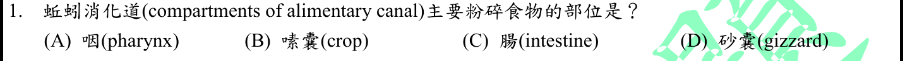
本地原卷PDF26 · 官方混科卷PDF26 · 官方原答案PDF1最下方生物表 · 已核對生物釋疑PDF8下方–13
官方採計：D 原答案：D
未列於本輪取得114生物釋疑PDF8下方至13；依同年度答案PDF1最下方生物表採計
主分類：Ch41 Animal Nutrition
41.2 / Digestive Compartments
目錄行2701；條目起始印刷頁904；實際目錄 PDF46
主分類理由：41.2 / Digestive Compartments：直接考消化道分區中砂囊的機械研磨功能，非蚯蚓演化親緣。
次分類理由：無另列最小次條目；重新比較咽、嗉囊、腸、砂囊四項，問題只需研磨功能，Ch41的Digestive Compartments直接涵蓋；Ch33物種分類不另列。
科學說明：採D。砂囊研磨，嗉囊主要暫存；咽吞食、腸消化吸收。蚯蚓名稱只是器官比較的情境。
來源涵蓋範圍：Campbell正文支援分類原理；題目限定及來源措辭差異保留於科學說明。
教材正文：印刷903／PDF952、印刷904／PDF953、印刷905／PDF954
補充來源：本題未另列課本外來源
另行比較：以Ch33環節動物取代Ch41消化分區是否更精確
重新比較咽、嗉囊、腸、砂囊四項，問題只需研磨功能，Ch41的Digestive Compartments直接涵蓋；Ch33物種分類不另列。
結論：證據確認，分類疑義已解決。完整覆核紀錄
Q02 · 18.1 / Operons: The Basic Concept 正式分類
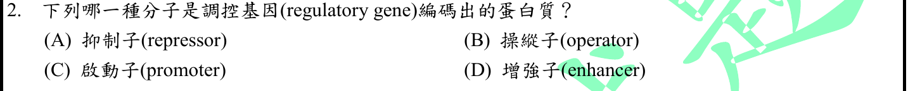
本地原卷PDF26 · 官方混科卷PDF26 · 官方原答案PDF1最下方生物表 · 已核對生物釋疑PDF8下方–13
官方採計：A 原答案：A
未列於本輪取得114生物釋疑PDF8下方至13；依同年度答案PDF1最下方生物表採計
主分類：Ch18 Regulation of Gene Expression
18.1 / Operons: The Basic Concept
目錄行1107；條目起始印刷頁366；實際目錄 PDF39
主分類理由：18.1 / Operons: The Basic Concept：核心是操縱組調控中調控基因的蛋白產物。
次分類理由：無另列最小次條目；辨認題問調控基因產物，repressor不同於三個DNA區；保留Ch18操縱組，另註operator中文誤用而不改答案。
科學說明：採A。抑制子為蛋白，operator、promoter、enhancer是DNA調控區。題本把operator譯為「操縱子」而非操縱區，原文照存，勿混成整個operon。
來源涵蓋範圍：Campbell正文支援分類原理；題目限定及來源措辭差異保留於科學說明。
教材正文：印刷366／PDF415、印刷367／PDF416、印刷368／PDF417
補充來源：本題未另列課本外來源
另行比較：是否屬Ch17蛋白合成或將operator當蛋白
辨認題問調控基因產物，repressor不同於三個DNA區；保留Ch18操縱組，另註operator中文誤用而不改答案。
結論：證據確認，分類疑義已解決。完整覆核紀錄
Q03 · 40.1 / Hierarchical Organization of Body Plans 正式分類
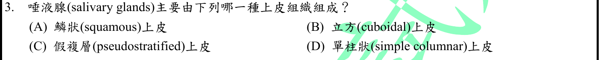
本地原卷PDF26 · 官方混科卷PDF26 · 官方原答案PDF1最下方生物表 · 已核對生物釋疑PDF8下方–13
官方採計：B 原答案：B
未列於本輪取得114生物釋疑PDF8下方至13；依同年度答案PDF1最下方生物表採計
主分類：Ch40 Basic Principles of Animal Form and Function
40.1 / Hierarchical Organization of Body Plans
目錄行2623；條目起始印刷頁876；實際目錄 PDF46
主分類理由：40.1 / Hierarchical Organization of Body Plans：直接依上皮形態與分泌功能辨認腺體，最小目錄為身體階層組織，細胞組織圖位於此條目。
次分類理由：無另列最小次條目；圖40.5直接列唾液腺立方上皮，題目只問形態；不因器官名稱加上未考的消化反應。採最小可驗目錄L2623。
科學說明：採B。圖40.5把唾液腺列為立方上皮例；腺體實際含不同導管與支持組織，不能說每個細胞皆立方。
來源涵蓋範圍：Campbell正文支援分類原理；題目限定及來源措辭差異保留於科學說明。
教材正文：印刷876／PDF925、印刷877／PDF926、印刷878／PDF927
補充來源：本題未另列課本外來源
另行比較：以Ch41唾液消化取代Ch40組織分類
圖40.5直接列唾液腺立方上皮，題目只問形態；不因器官名稱加上未考的消化反應。採最小可驗目錄L2623。
結論：證據確認，分類疑義已解決。完整覆核紀錄
Q04 · 44.3 / Survey of Excretory Systems 正式分類
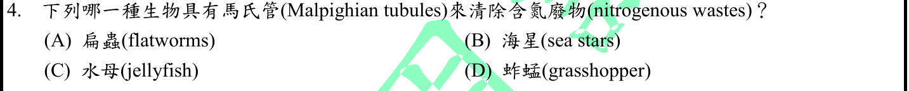
本地原卷PDF26 · 官方混科卷PDF26 · 官方原答案PDF1最下方生物表 · 已核對生物釋疑PDF8下方–13
官方採計：D 原答案：D
未列於本輪取得114生物釋疑PDF8下方至13；依同年度答案PDF1最下方生物表採計
主分類：Ch44 Osmoregulation and Excretion
44.3 / Survey of Excretory Systems
目錄行2967；條目起始印刷頁984；實際目錄 PDF47
主分類理由：44.3 / Survey of Excretory Systems：比較不同動物的排泄構造，馬氏管是本條目中的昆蟲例。
次分類理由：無另列最小次條目；四物種是不同排泄構造的對照，Malpighian實見984–985；主維持排泄系統總覽，不增加演化支系。
科學說明：採D。蚱蜢為昆蟲，馬氏管向消化道分泌廢物；扁蟲的原腎管系統不是馬氏管。
來源涵蓋範圍：Campbell正文支援分類原理；題目限定及來源措辭差異保留於科學說明。
教材正文：印刷983／PDF1032、印刷984／PDF1033、印刷985／PDF1034
補充來源：本題未另列課本外來源
另行比較：是否應分類昆蟲而非排泄生理
四物種是不同排泄構造的對照，Malpighian實見984–985；主維持排泄系統總覽，不增加演化支系。
結論：證據確認，分類疑義已解決。完整覆核紀錄
Q05 · 39.2 / A Survey of Plant Hormones 正式分類
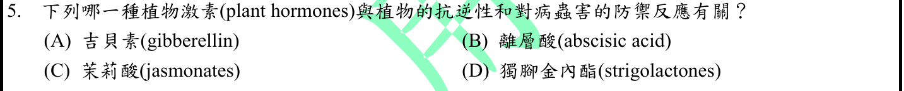
本地原卷PDF26 · 官方混科卷PDF26 · 官方原答案PDF1最下方生物表 · 釋疑PDF8
官方採計：C 原答案：C
同年度釋疑維持原答案C
主分類：Ch39 Plant Responses to Internal and External Signals
39.2 / A Survey of Plant Hormones
目錄行2557；條目起始印刷頁847；實際目錄 PDF45
次分類：Ch39 Plant Responses to Internal and External Signals
39.5 / Defenses Against Herbivores
目錄行2599；條目起始印刷頁867；實際目錄 PDF45
次分類：Ch39 Plant Responses to Internal and External Signals
39.5 / Defenses Against Pathogens
目錄行2596；條目起始印刷頁866；實際目錄 PDF45
主分類理由：39.2 / A Survey of Plant Hormones：以激素身分及功能組合辨認茉莉酸，故主歸植物激素總覽的真實最小目錄。
次分類理由：39.5 / Defenses Against Herbivores：昆蟲取食誘發茉莉酸防禦是題幹的蟲害面向；39.5 / Defenses Against Pathogens：病原入侵及防禦亦是明示條件，同章次目照存
科學說明：採C，釋疑維持。Campbell表39.1與855頁同時連結茉莉酸、傷害、植食與病原防禦。ABA也參與逆境，不能把抗逆性專屬茉莉酸；此題依病蟲害聯合條件判讀。
來源涵蓋範圍：Campbell正文支援分類原理；題目限定及來源措辭差異保留於科學說明。
教材正文：印刷846／PDF895、印刷847／PDF896、印刷855／PDF904、印刷866／PDF915、印刷867／PDF916、印刷868／PDF917
補充來源：本題未另列課本外來源
另行比較：ABA抗逆性是否推翻茉莉酸或應只歸抗病
846表與855正文同時涵蓋茉莉酸及病蟲防禦，C符合聯合題意；保留激素主目、植食與病原兩個同章次目，ABA界線已寫入。
結論：證據確認，分類疑義已解決。完整覆核紀錄
Q06 · 29.3 / Origins and Traits of Vascular Plants 正式分類
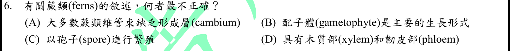
本地原卷PDF26 · 官方混科卷PDF26 · 官方原答案PDF1最下方生物表 · 已核對生物釋疑PDF8下方–13
官方採計：B 原答案：B
未列於本輪取得114生物釋疑PDF8下方至13；依同年度答案PDF1最下方生物表採計
主分類：Ch29 Plant Diversity I: How Plants Colonized Land
29.3 / Origins and Traits of Vascular Plants
目錄行1890；條目起始印刷頁629；實際目錄 PDF43
次分類：Ch29 Plant Diversity I: How Plants Colonized Land
29.3 / Classification of Seedless Vascular Plants
目錄行1893；條目起始印刷頁631；實際目錄 PDF43
主分類理由：29.3 / Origins and Traits of Vascular Plants：辨別維管植物的世代優勢、輸導組織等共同衍生性狀。
次分類理由：29.3 / Classification of Seedless Vascular Plants：蕨類具名類群的生活史與分類提供主條目所述特徵的具體對照
科學說明：採B為最不正確。蕨類主要可見植株是孢子體，配子體非優勢世代；有木質部韌皮部、以孢子繁殖。
來源涵蓋範圍：Campbell正文支援分類原理；題目限定及來源措辭差異保留於科學說明。
教材正文：印刷629／PDF678、印刷630／PDF679、印刷631／PDF680、印刷632／PDF681
補充來源：本題未另列課本外來源
另行比較：是否只歸蕨類分類而忽略世代優勢
錯項B的判斷來自維管植物孢子體優勢；蕨類分類給具體例，故主L1890次L1893，沒有把孢子繁殖誤認為配子體優勢。
結論：證據確認，分類疑義已解決。完整覆核紀錄
Q07 · 52.2 / General Features of Terrestrial Biomes 正式分類
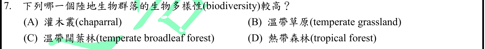
本地原卷PDF26 · 官方混科卷PDF26 · 官方原答案PDF1最下方生物表 · 已核對生物釋疑PDF8下方–13
官方採計：D 原答案：D
未列於本輪取得114生物釋疑PDF8下方至13；依同年度答案PDF1最下方生物表採計
主分類：Ch52 An Introduction to Ecology and the Biosphere
52.2 / General Features of Terrestrial Biomes
目錄行3493；條目起始印刷頁1172；實際目錄 PDF49
次分類：Ch54 Community Ecology
54.4 / Latitudinal Gradients
目錄行3643；條目起始印刷頁1232；實際目錄 PDF50
主分類理由：52.2 / General Features of Terrestrial Biomes：四選项為陸域生物群系，先依群系比較辨別熱帶森林。
次分類理由：54.4 / Latitudinal Gradients：熱帶高物種豐度也涉及群落多樣性的緯度梯度
科學說明：採D。教材熱帶森林圖列高度多樣性；緯度模式為一般趨勢，不能保證每片森林與每個分類群都最高。
來源涵蓋範圍：Campbell正文支援分類原理；題目限定及來源措辭差異保留於科學說明。
教材正文：印刷1172／PDF1221、印刷1173／PDF1222、印刷1174／PDF1223、印刷1232／PDF1281
補充來源：本題未另列課本外來源
另行比較：只歸群落物種豐度是否較準
四個選项是群系比較，1173熱帶森林內容直接答D；緯度梯度解釋多樣性模式而作次目，不把熱帶森林圖名冒充TOC葉節點。
結論：證據確認，分類疑義已解決。完整覆核紀錄
Q08 · 42.1 / Organization of Vertebrate Circulatory Systems 正式分類
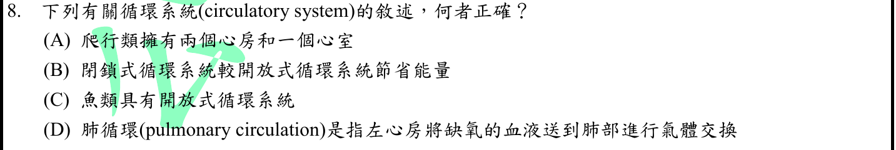
本地原卷PDF26 · 官方混科卷PDF26 · 官方原答案PDF1最下方生物表 · 釋疑PDF8
官方採計：A 原答案：A
同年度釋疑維持原答案A
主分類：Ch42 Circulation and Gas Exchange
42.1 / Organization of Vertebrate Circulatory Systems
目錄行2763；條目起始印刷頁924；實際目錄 PDF46
次分類：Ch42 Circulation and Gas Exchange
42.1 / Open and Closed Circulatory Systems
目錄行2760；條目起始印刷頁923；實際目錄 PDF46
主分類理由：42.1 / Organization of Vertebrate Circulatory Systems：心房心室數與脊椎動物血流路徑為主要判斷。
次分類理由：42.1 / Open and Closed Circulatory Systems：B、C另考開放與閉鎖循環的能耗和脊椎動物系統，保留同章次目
科學說明：採A，釋疑維持。多數非鳥爬蟲兩心房一心室，鱷類四腔例外；魚類閉鎖循環，肺循環從右心室出發。原題「爬行類」未限縮，保留鱷類例外，不改題幹。
來源涵蓋範圍：Campbell正文支援分類原理；題目限定及來源措辭差異保留於科學說明。
教材正文：印刷923／PDF972、印刷924／PDF973、印刷925／PDF974
補充來源：本題未另列課本外來源
另行比較：鱷類四腔例外是否造成分類待審
官方A維持及925正文鱷類例外均已比對；廣泛量詞的來源差異保留，分類仍明確是脊椎循環加開閉系統，不靠消除例外結案。
結論：證據確認，分類疑義已解決。完整覆核紀錄
Q09 · 27.3 / Nitrogen Metabolism 正式分類
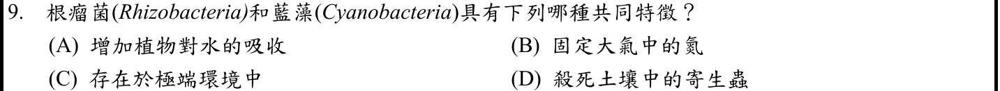
本地原卷PDF26 · 官方混科卷PDF26 · 官方原答案PDF1最下方生物表 · 已核對生物釋疑PDF8下方–13
官方採計：B 原答案：B
未列於本輪取得114生物釋疑PDF8下方至13；依同年度答案PDF1最下方生物表採計
主分類：Ch27 Bacteria and Archaea
27.3 / Nitrogen Metabolism
目錄行1738；條目起始印刷頁582；實際目錄 PDF42
次分類：Ch37 Soil and Plant Nutrition
37.3 / Bacteria and Plant Nutrition
目錄行2463；條目起始印刷頁814；實際目錄 PDF45
主分類理由：27.3 / Nitrogen Metabolism：共同功能是原核生物把大氣N2還原的氮代謝。
次分類理由：37.3 / Bacteria and Plant Nutrition：根瘤共生菌供應植物氮素，解釋其中一方的植物營養情境
科學說明：採B。中文根瘤菌通常對應rhizobia，題本英文Rhizobacteria較廣；也非所有藍綠菌皆固氮。以具固氮能力的代表判讀，保留雙語與量詞界線。
來源涵蓋範圍：Campbell正文支援分類原理；題目限定及來源措辭差異保留於科學說明。
教材正文：印刷582／PDF631、印刷814／PDF863、印刷815／PDF864、印刷816／PDF865
補充來源：本題未另列課本外來源
另行比較：植物營養應否作唯一主目
兩個原核群的共通判斷為固氮，故氮代謝主目；根瘤共生作次目。Rhizobacteria廣義與部分藍綠菌才固氮的限制已保留。
結論：證據確認，分類疑義已解決。完整覆核紀錄
Q10 · 43.2 / Antigen Recognition by B Cells and Antibodies 正式分類
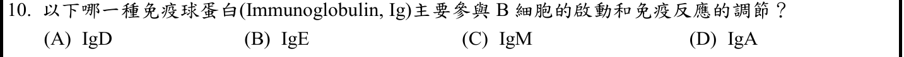
本地原卷PDF27 · 官方混科卷PDF27 · 官方原答案PDF1最下方生物表 · 釋疑PDF8
官方採計：A 原答案：A
同年度釋疑維持原答案A
主分類：Ch43 The Immune System
43.2 / Antigen Recognition by B Cells and Antibodies
目錄行2883；條目起始印刷頁958；實際目錄 PDF47
次分類：Ch43 The Immune System
43.3 / B Cells and Antibodies: A Response to Extracellular Pathogens
目錄行2899；條目起始印刷頁964；實際目錄 PDF47
主分類理由：43.2 / Antigen Recognition by B Cells and Antibodies：直接辨認B細胞膜上抗原受體與啟動，主歸B細胞抗原辨識。
次分類理由：43.3 / B Cells and Antibodies: A Response to Extracellular Pathogens：Ig類型及膜型／分泌型抗體差異是四個選项的比較基礎
科學說明：官方採A且維持。Campbell966頁把IgD稱為膜上BCR並写exclusively membrane bound；原始研究顯示IgM亦為BCR且存在分泌IgD，因此不能把A讀成IgD獨占B細胞活化。官方「主要」採計與科學非排他性分開。
來源涵蓋範圍：Campbell支援所列分類原理；具名物種地點、現代技術與科學界線由列示來源補足，實讀範圍見來源紀錄。
教材正文：印刷958／PDF1007、印刷959／PDF1008、印刷964／PDF1013、印刷965／PDF1014、印刷966／PDF1015
補充來源：S10
另行比較：IgM也作BCR、分泌IgD與教材文字相衝
實讀966及兩項原始研究，官方採A照存，科學不說IgD獨占或不分泌。主目為B細胞抗原辨識，抗體類型同章次目保留。
結論：證據確認，分類疑義已解決。完整覆核紀錄
Q11 · 38.1 / Fruit Structure and Function 正式分類
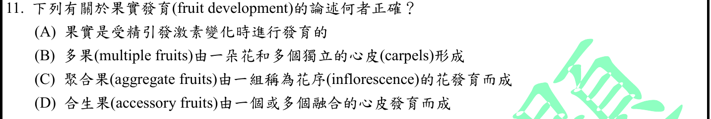
本地原卷PDF27 · 官方混科卷PDF27 · 官方原答案PDF1最下方生物表 · 釋疑PDF8
官方採計：A 原答案：A
同年度釋疑維持原答案A
主分類：Ch38 Angiosperm Reproduction and Biotechnology
38.1 / Fruit Structure and Function
目錄行2501；條目起始印刷頁830；實際目錄 PDF45
主分類理由：38.1 / Fruit Structure and Function：比較果實發育來源、聚合果、多花果與附屬果。
次分類理由：無另列最小次條目；A對正常受精途徑成立，題與釋疑已核；不刪除無受精發育的例外。其他果實選项互換定義，果實結構功能足以分類。
科學說明：採A且維持。正常受精引發激素變化促果實發育；聚合果來自一花多心皮，多花果來自花序，附屬果包含子房以外組織。單為結果例外及题本「合生果(accessory fruits)」用語保留。
來源涵蓋範圍：Campbell正文支援分類原理；題目限定及來源措辭差異保留於科學說明。
教材正文：印刷830／PDF879、印刷831／PDF880、印刷832／PDF881
補充來源：本題未另列課本外來源
另行比較：單為結果是否使正常果實發育A失效
A對正常受精途徑成立，題與釋疑已核；不刪除無受精發育的例外。其他果實選项互換定義，果實結構功能足以分類。
結論：證據確認，分類疑義已解決。完整覆核紀錄
Q12 · 43.4 / Exaggerated, Self-Directed, and Diminished Immune Responses 正式分類
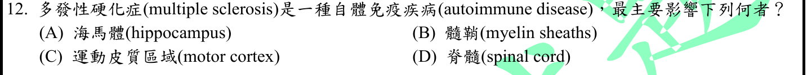
本地原卷PDF27 · 官方混科卷PDF27 · 官方原答案PDF1最下方生物表 · 已核對生物釋疑PDF8下方–13
官方採計：B 原答案：B
未列於本輪取得114生物釋疑PDF8下方至13；依同年度答案PDF1最下方生物表採計
主分類：Ch43 The Immune System
43.4 / Exaggerated, Self-Directed, and Diminished Immune Responses
目錄行2924；條目起始印刷頁970；實際目錄 PDF47
次分類：Ch48 Neurons, Synapses, and Signaling
48.3 / Conduction of Action Potentials
目錄行3212；條目起始印刷頁1075；實際目錄 PDF48
主分類理由：43.4 / Exaggerated, Self-Directed, and Diminished Immune Responses：題幹明示自體免疫疾病，直接考免疫反應誤傷自身組織。
次分類理由：48.3 / Conduction of Action Potentials：髓鞘及跳躍傳導說明被攻擊結構的功能，不另把疾病章當主分類
科學說明：採B。多發性硬化主要涉及中樞髓鞘損傷；脊髓可受影響但不是本題所問的最直接結構層級。
來源涵蓋範圍：Campbell正文支援分類原理；題目限定及來源措辭差異保留於科學說明。
教材正文：印刷970／PDF1019、印刷971／PDF1020、印刷1075／PDF1124、印刷1076／PDF1125
補充來源：本題未另列課本外來源
另行比較：神經系統病症或髓鞘傳導是否應主歸神經章
題先定義自身免疫再問靶結構，主歸免疫異常；髓鞘機制保留Ch48次目，避免把脊髓與髓鞘當同一層級選项。
結論：證據確認，分類疑義已解決。完整覆核紀錄
Q13 · 27.1 / Cell-Surface Structures 正式分類
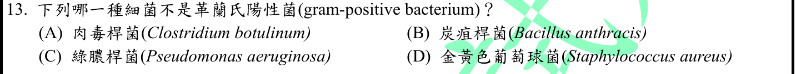
本地原卷PDF27 · 官方混科卷PDF27 · 官方原答案PDF1最下方生物表 · 已核對生物釋疑PDF8下方–13
官方採計：C 原答案：C
未列於本輪取得114生物釋疑PDF8下方至13；依同年度答案PDF1最下方生物表採計
主分類：Ch27 Bacteria and Archaea
27.1 / Cell-Surface Structures
目錄行1709；條目起始印刷頁574；實際目錄 PDF42
主分類理由：27.1 / Cell-Surface Structures：革蘭氏染色差異由細胞壁與外膜結構解釋。
次分類理由：無另列最小次條目；細胞表面構造才直接決定Gram差異，CDC核實P.aeruginosa陰性；不將細菌屬名視為教材已列證據。
科學說明：採C。綠膿桿菌為革蘭氏陰性；本地Campbell支援染色機制，具名物種以CDC指引核對，不能僅憑菌名猜測。
來源涵蓋範圍：Campbell支援所列分類原理；具名物種地點、現代技術與科學界線由列示來源補足，實讀範圍見來源紀錄。
教材正文：印刷574／PDF623、印刷575／PDF624、印刷587／PDF636
補充來源：S13
另行比較：以分類演化支系推測革蘭氏性質
細胞表面構造才直接決定Gram差異，CDC核實P.aeruginosa陰性；不將細菌屬名視為教材已列證據。
結論：證據確認，分類疑義已解決。完整覆核紀錄
Q14 · 16.2 / Replicating the Ends of DNA Molecules 正式分類
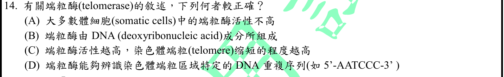
本地原卷PDF27 · 官方混科卷PDF27 · 官方原答案PDF1最下方生物表 · 已核對生物釋疑PDF8下方–13
官方採計：A 原答案：A
未列於本輪取得114生物釋疑PDF8下方至13；依同年度答案PDF1最下方生物表採計
主分類：Ch16 The Molecular Basis of Inheritance
16.2 / Replicating the Ends of DNA Molecules
目錄行1019；條目起始印刷頁328；實際目錄 PDF39
主分類理由：16.2 / Replicating the Ends of DNA Molecules：端粒酶解決線性染色體末端複製問題是直接考點。
次分類理由：無另列最小次條目；比較328–330的酶、端粒与體細胞敘述，A支持；原題D保留5′方向，互補不代表5′-AATCCC-3′即標準端粒序列，主末端複製穩定。
科學說明：採A。多數分化體細胞端粒酶低，酶含RNA模板與蛋白，維持而非加速縮短端粒；人類常用重複序列寫5′-TTAGGG-3′，題本5′-AATCCC-3′方向不可與互補鏈3′-AATCCC-5′混同。
來源涵蓋範圍：Campbell正文支援分類原理；題目限定及來源措辭差異保留於科學說明。
教材正文：印刷328／PDF377、印刷329／PDF378、印刷330／PDF379
補充來源：本題未另列課本外來源
另行比較：端粒DNA序列與RNA模板是否混淆
比較328–330的酶、端粒与體細胞敘述，A支持；原題D保留5′方向，互補不代表5′-AATCCC-3′即標準端粒序列，主末端複製穩定。
結論：證據確認，分類疑義已解決。完整覆核紀錄
Q15 · 48.4 / Neurotransmitters 正式分類
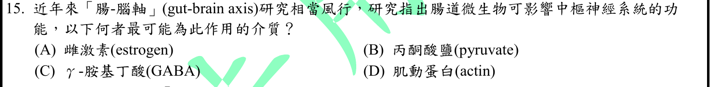
本地原卷PDF27 · 官方混科卷PDF27 · 官方原答案PDF1最下方生物表 · 已核對生物釋疑PDF8下方–13
官方採計：C 原答案：C
未列於本輪取得114生物釋疑PDF8下方至13；依同年度答案PDF1最下方生物表採計
主分類：Ch48 Neurons, Synapses, and Signaling
48.4 / Neurotransmitters
目錄行3231；條目起始印刷頁1080；實際目錄 PDF48
次分類：Ch41 Animal Nutrition
41.4 / Mutualistic Adaptations
目錄行2733；條目起始印刷頁912；實際目錄 PDF46
主分類理由：48.4 / Neurotransmitters：四選項中GABA作為神經傳遞介質最直接回答題目。
次分類理由：41.4 / Mutualistic Adaptations：腸道微生物與宿主互利關係交代訊號來源情境
科學說明：採C。GABA為中樞主要抑制性傳遞物。腸菌小鼠研究支持迷走神經相關GABA受體調節，不能推出所有腸菌GABA直接入腦或人體治療有效。
來源涵蓋範圍：Campbell支援所列分類原理；具名物種地點、現代技術與科學界線由列示來源補足，實讀範圍見來源紀錄。
教材正文：印刷912／PDF961、印刷913／PDF962、印刷1080／PDF1129、印刷1081／PDF1130
補充來源：S15
另行比較：腸道互利菌應否壓過神經傳遞介質
題直接問四分子何者介質，GABA作用最小目錄為Neurotransmitters；小鼠迷走結果補腸腦情境，沒有聲稱GABA直接入腦。
結論：證據確認，分類疑義已解決。完整覆核紀錄
Q16 · 40.3 / Balancing Heat Loss and Gain 正式分類
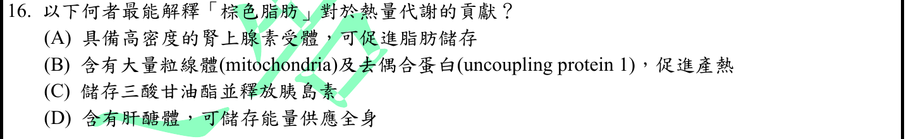
本地原卷PDF27 · 官方混科卷PDF27 · 官方原答案PDF1最下方生物表 · 已核對生物釋疑PDF8下方–13
官方採計：B 原答案：B
未列於本輪取得114生物釋疑PDF8下方至13；依同年度答案PDF1最下方生物表採計
主分類：Ch40 Basic Principles of Animal Form and Function
40.3 / Balancing Heat Loss and Gain
目錄行2649；條目起始印刷頁885；實際目錄 PDF46
次分類：Ch09 Cellular Respiration and Fermentation
9.4 / Chemiosmosis: The Energy-Coupling Mechanism
目錄行585；條目起始印刷頁175；實際目錄 PDF37
主分類理由：40.3 / Balancing Heat Loss and Gain：問題目標為棕色脂肪的產熱與體溫平衡。
次分類理由：9.4 / Chemiosmosis: The Energy-Coupling Mechanism：UCP1使質子梯度能量轉為熱而少耦聯ATP合成，需保留化學滲透原理
科學說明：採B。棕脂多粒線體，去偶合蛋白促非顫抖產熱；脂肪儲存、分泌胰島素與肝醣體皆非此機制。
來源涵蓋範圍：Campbell正文支援分類原理；題目限定及來源措辭差異保留於科學說明。
教材正文：印刷175／PDF224、印刷176／PDF225、印刷177／PDF226、印刷178／PDF227、印刷886／PDF935、印刷887／PDF936
補充來源：本題未另列課本外來源
另行比較：細胞呼吸化學滲透是否應作主目
題求棕脂對熱量代謝貢獻，體溫产熱是目的；UCP1質子去偶聯是必要次目，兩章各計一次。
結論：證據確認，分類疑義已解決。完整覆核紀錄
Q17 · 18.2 / Mechanisms of Post-transcriptional Regulation 正式分類
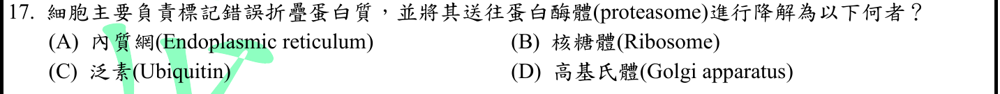
本地原卷PDF27 · 官方混科卷PDF27 · 官方原答案PDF1最下方生物表 · 已核對生物釋疑PDF8下方–13
官方採計：C 原答案：C
未列於本輪取得114生物釋疑PDF8下方至13；依同年度答案PDF1最下方生物表採計
主分類：Ch18 Regulation of Gene Expression
18.2 / Mechanisms of Post-transcriptional Regulation
目錄行1129；條目起始印刷頁377；實際目錄 PDF39
主分類理由：18.2 / Mechanisms of Post-transcriptional Regulation：泛素標記及蛋白酶體降解在轉錄後調控條目下的蛋白質加工降解段落，未虛構目錄子目。
次分類理由：無另列最小次條目；題問標記送往proteasome的分子而非發現錯誤的場所，C為泛素；正文Protein Processing and Degradation在轉錄後機制下，未造新TOC項。
科學說明：採C。泛素是標記，蛋白酶體執行蛋白水解；內質網可參與品質控制，但不是四選项中的標記分子。
來源涵蓋範圍：Campbell正文支援分類原理；題目限定及來源措辭差異保留於科學說明。
教材正文：印刷377／PDF426、印刷378／PDF427、印刷379／PDF428
補充來源：本題未另列課本外來源
另行比較：ER錯誤折疊品質控制是否比泛素降解更直接
題問標記送往proteasome的分子而非發現錯誤的場所，C為泛素；正文Protein Processing and Degradation在轉錄後機制下，未造新TOC項。
結論：證據確認，分類疑義已解決。完整覆核紀錄
Q18 · 30.1 / The Evolutionary Advantage of Seeds 正式分類
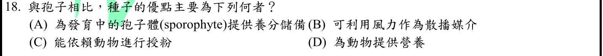
本地原卷PDF27 · 官方混科卷PDF27 · 官方原答案PDF1最下方生物表 · 已核對生物釋疑PDF8下方–13
官方採計：A 原答案：A
未列於本輪取得114生物釋疑PDF8下方至13；依同年度答案PDF1最下方生物表採計
主分類：Ch30 Plant Diversity II: The Evolution of Seed Plants
30.1 / The Evolutionary Advantage of Seeds
目錄行1919；條目起始印刷頁639；實際目錄 PDF43
主分類理由：30.1 / The Evolutionary Advantage of Seeds：直接比較種子相對孢子的演化優勢。
次分類理由：無另列最小次條目；風散播孢子也能，因此相對優勢在胚養分保護；種子演化優勢條目直接答題，無須另加動物取食。
科學說明：採A。種子內有胚即幼小孢子體，並供養分保護；風散播不為種子獨有，授粉與供動物食用非題問的核心胚營養優勢。
來源涵蓋範圍：Campbell正文支援分類原理；題目限定及來源措辭差異保留於科學說明。
教材正文：印刷638／PDF687、印刷639／PDF688、印刷640／PDF689
補充來源：本題未另列課本外來源
另行比較：風傳播也是種子特性是否影響A
風散播孢子也能，因此相對優勢在胚養分保護；種子演化優勢條目直接答題，無須另加動物取食。
結論：證據確認，分類疑義已解決。完整覆核紀錄
Q19 · 39.3 / Photoperiodism and Responses to Seasons 正式分類
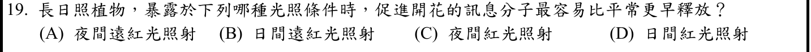
本地原卷PDF27 · 官方混科卷PDF27 · 官方原答案PDF1最下方生物表 · 已核對生物釋疑PDF8下方–13
官方採計：C 原答案：C
未列於本輪取得114生物釋疑PDF8下方至13；依同年度答案PDF1最下方生物表採計
主分類：Ch39 Plant Responses to Internal and External Signals
39.3 / Photoperiodism and Responses to Seasons
目錄行2576；條目起始印刷頁859；實際目錄 PDF45
次分類：Ch39 Plant Responses to Internal and External Signals
39.3 / Phytochrome Photoreceptors
目錄行2567；條目起始印刷頁856；實際目錄 PDF45
主分類理由：39.3 / Photoperiodism and Responses to Seasons：光週期以夜長控制開花，夜間紅光打斷長夜是判斷核心。
次分類理由：39.3 / Phytochrome Photoreceptors：紅／遠紅光的可逆感光素轉換解釋夜間光脈衝效果
科學說明：採C。對題設長日照植物，夜中紅光可縮短生理上連續暗期而促開花；远紅光可逆轉先前紅光效應，非所有植物不分時序皆同樣。
來源涵蓋範圍：Campbell正文支援分類原理；題目限定及來源措辭差異保留於科學說明。
教材正文：印刷856／PDF905、印刷857／PDF906、印刷859／PDF908、印刷860／PDF909、印刷861／PDF910
補充來源：本題未另列課本外來源
另行比較：長日照與短夜是否混同、遠紅光時序是否遺漏
對照光週期圖及phytochrome，夜中紅光中斷暗期促題設植物開花；日間照光選项不能等同夜中脈衝，保留兩個同章葉節點。
結論：證據確認，分類疑義已解決。完整覆核紀錄
Q20 · 17.3 / Alteration of mRNA Ends 正式分類
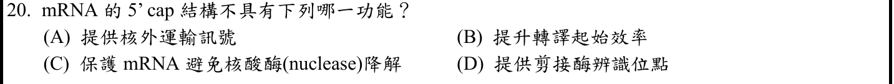
本地原卷PDF28 · 官方混科卷PDF28 · 官方原答案PDF1最下方生物表 · 釋疑PDF9
官方採計：D 原答案：D
同年度釋疑維持原答案D
主分類：Ch17 Gene Expression: From Gene to Protein
17.3 / Alteration of mRNA Ends
目錄行1059；條目起始印刷頁345；實際目錄 PDF39
次分類：Ch17 Gene Expression: From Gene to Protein
17.3 / Split Genes and RNA Splicing
目錄行1062；條目起始印刷頁345；實際目錄 PDF39
主分類理由：17.3 / Alteration of mRNA Ends：5′帽的保護、輸出及轉譯功能屬mRNA末端修飾。
次分類理由：17.3 / Split Genes and RNA Splicing：D涉及剪接位點辨識，需保留RNA剪接條目以區分功能
科學說明：官方採D且維持。帽結合複合體可促進第一內含子剪接，並不等於帽本身提供內含子剪接辨識序列；不能解釋成5′cap與剪接完全無關。
來源涵蓋範圍：Campbell正文支援分類原理；題目限定及來源措辭差異保留於科學說明。
教材正文：印刷345／PDF394、印刷346／PDF395、印刷347／PDF396
補充來源：本題未另列課本外來源
另行比較：cap會促剪接是否推翻D
分清帽結合複合體促首內含子剪接與剪接序列辨識；官方D採計不動，末端修飾主目和剪接次目共同保留此差異。
結論：證據確認，分類疑義已解決。完整覆核紀錄
Q21 · 43.3 / Antibodies as Tools 正式分類
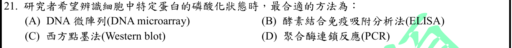
本地原卷PDF28 · 官方混科卷PDF28 · 官方原答案PDF1最下方生物表 · 釋疑PDF9
官方採計：B/C 原答案：C
同年度釋疑改為B/C皆可；組合包PDF32更正表一致
主分類：Ch43 The Immune System
43.3 / Antibodies as Tools
目錄行2914；條目起始印刷頁969；實際目錄 PDF47
次分類：Ch11 Cell Communication
11.3 / Protein Phosphorylation and Dephosphorylation
目錄行721；條目起始印刷頁222；實際目錄 PDF38
主分類理由：43.3 / Antibodies as Tools：以特異抗體辨識蛋白狀態，主歸抗體作為工具。
次分類理由：11.3 / Protein Phosphorylation and Dephosphorylation：磷酸化為蛋白訊號調控狀態，補充被檢測對象的意義
科學說明：原答案C，官方釋疑改B/C皆可；組合包32頁亦為BC。磷酸化特異抗體可用於Western blot或ELISA，須有合適抗體與對照；DNA微陣列與PCR不直接量蛋白磷酸化。
來源涵蓋範圍：Campbell正文支援分類原理；題目限定及來源措辭差異保留於科學說明。
教材正文：印刷222／PDF271、印刷223／PDF272、印刷969／PDF1018
補充來源：本題未另列課本外來源
另行比較：只保留Western是否漏掉已改採計的ELISA
再對照釋疑9與組合包32，B/C皆可明確；两法均需狀態特異抗體。分類抗體工具及磷酸化原理，原C和更正B/C分欄。
結論：證據確認，分類疑義已解決。完整覆核紀錄
Q22 · 9.3 / The Citric Acid Cycle 正式分類
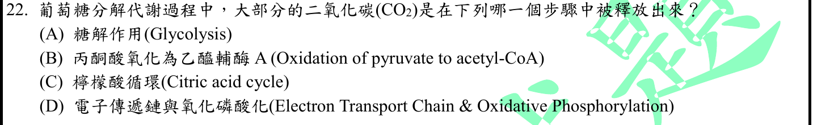
本地原卷PDF28 · 官方混科卷PDF28 · 官方原答案PDF1最下方生物表 · 已核對生物釋疑PDF8下方–13
官方採計：C 原答案：C
未列於本輪取得114生物釋疑PDF8下方至13；依同年度答案PDF1最下方生物表採計
主分類：Ch09 Cellular Respiration and Fermentation
9.3 / The Citric Acid Cycle
目錄行575；條目起始印刷頁172；實際目錄 PDF37
次分類：Ch09 Cellular Respiration and Fermentation
9.3 / Oxidation of Pyruvate to Acetyl CoA
目錄行572；條目起始印刷頁171；實際目錄 PDF37
主分類理由：9.3 / The Citric Acid Cycle：主要CO2釋放位於檸檬酸循環的脫羧步驟。
次分類理由：9.3 / Oxidation of Pyruvate to Acetyl CoA：與丙酮酸氧化的CO2產量比較才能判斷「大部分」
科學說明：採C。每葡萄糖完全氧化的化學計量：丙酮酸氧化2CO2、兩輪循環共4CO2，糖解及ETC不直接產CO2；不宣稱新進乙醯碳在第一輪就全部排出。
來源涵蓋範圍：Campbell正文支援分類原理；題目限定及來源措辭差異保留於科學說明。
教材正文：印刷171／PDF220、印刷172／PDF221、印刷173／PDF222、印刷174／PDF223
補充來源：本題未另列課本外來源
另行比較：是否把丙酮酸脫羧當全部CO2來源
重算每葡萄糖2+4=6，循環4大於前步2；主循環次丙酮酸氧化，同章去重；未混用追蹤標記碳第一輪的說法。
結論：證據確認，分類疑義已解決。完整覆核紀錄
Q23 · 43.2 / B Cell and T Cell Development 正式分類
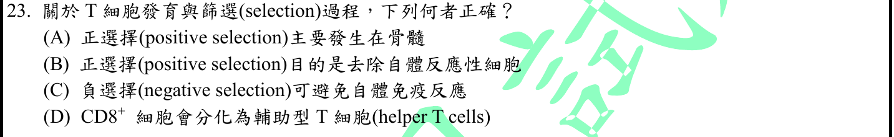
本地原卷PDF28 · 官方混科卷PDF28 · 官方原答案PDF1最下方生物表 · 已核對生物釋疑PDF8下方–13
官方採計：C 原答案：C
未列於本輪取得114生物釋疑PDF8下方至13；依同年度答案PDF1最下方生物表採計
主分類：Ch43 The Immune System
43.2 / B Cell and T Cell Development
目錄行2889；條目起始印刷頁960；實際目錄 PDF47
主分類理由：43.2 / B Cell and T Cell Development：T細胞成熟過程的自體耐受與選擇屬B/T細胞發育。
次分類理由：無另列最小次條目；961自體耐受段指出自體反應细胞凋亡／失活，支持C；分類在淋巴球發育，非既成疾病的異常反應条目。
科學說明：採C。負選擇去除強自體反應性克隆以降低自體免疫；正選擇於胸腺保留能適度辨識自身MHC者。CD8通常成細胞毒性T細胞而非CD4輔助型。
來源涵蓋範圍：Campbell正文支援分類原理；題目限定及來源措辭差異保留於科學說明。
教材正文：印刷960／PDF1009、印刷961／PDF1010、印刷962／PDF1011
補充來源：本題未另列課本外來源
另行比較：正選擇和負選擇兩種目的是否顛倒
961自體耐受段指出自體反應细胞凋亡／失活，支持C；分類在淋巴球發育，非既成疾病的異常反應条目。
結論：證據確認，分類疑義已解決。完整覆核紀錄
Q24 · 43.3 / B Cells and Antibodies: A Response to Extracellular Pathogens 正式分類
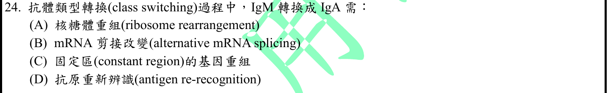
本地原卷PDF28 · 官方混科卷PDF28 · 官方原答案PDF1最下方生物表 · 已核對生物釋疑PDF8下方–13
官方採計：C 原答案：C
未列於本輪取得114生物釋疑PDF8下方至13；依同年度答案PDF1最下方生物表採計
主分類：Ch43 The Immune System
43.3 / B Cells and Antibodies: A Response to Extracellular Pathogens
目錄行2899；條目起始印刷頁964；實際目錄 PDF47
次分類：Ch43 The Immune System
43.2 / B Cell and T Cell Development
目錄行2889；條目起始印刷頁960；實際目錄 PDF47
主分類理由：43.3 / B Cells and Antibodies: A Response to Extracellular Pathogens：題問成熟B細胞抗體類型與效應改變，主歸B細胞和抗體反應。
次分類理由：43.2 / B Cell and T Cell Development：與最初抗原受體多樣性的基因重排作比較，保留發育條目
科學說明：採C。IgM轉IgA為重鏈恆定區DNA類型轉換重組，維持VDJ特異性；IgM與IgD共表現的選擇性RNA處理不是這種轉換。Campbell966支援恆定區差異，具體機制由Alberts補足。
來源涵蓋範圍：Campbell支援所列分類原理；具名物種地點、現代技術與科學界線由列示來源補足，實讀範圍見來源紀錄。
教材正文：印刷961／PDF1010、印刷964／PDF1013、印刷965／PDF1014、印刷966／PDF1015
補充來源：S24
另行比較：IgM/IgD RNA處理與IgM/IgA class switch是否混用
比對Campbell恆定區與Alberts重組段落，C為DNA事件，並保留VDJ不更換。主成熟B抗體反應、次初始受體發育比較。
結論：證據確認，分類疑義已解決。完整覆核紀錄
Q25 · 54.2 / Bottom-Up and Top-Down Controls 正式分類
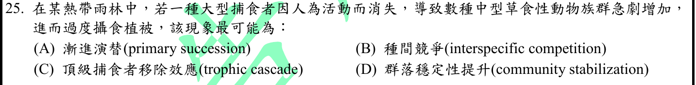
本地原卷PDF28 · 官方混科卷PDF28 · 官方原答案PDF1最下方生物表 · 已核對生物釋疑PDF8下方–13
官方採計：C 原答案：C
未列於本輪取得114生物釋疑PDF8下方至13；依同年度答案PDF1最下方生物表採計
主分類：Ch54 Community Ecology
54.2 / Bottom-Up and Top-Down Controls
目錄行3623；條目起始印刷頁1226；實際目錄 PDF50
次分類：Ch54 Community Ecology
54.2 / Species with a Large Impact
目錄行3620；條目起始印刷頁1225；實際目錄 PDF50
主分類理由：54.2 / Bottom-Up and Top-Down Controls：捕食者移除向下改變草食動物與植被，是由上而下的營養級連鎖。
次分類理由：54.2 / Species with a Large Impact：高影響捕食者與關鍵種解釋群落效應來源，但不額外斷定題未提供的數量比例
科學說明：採C。捕食壓力下降使植食者增長並壓低植被；不是原生演替或穩定性上升。中文選项「漸進演替(primary succession)」原样保留。
來源涵蓋範圍：Campbell正文支援分類原理；題目限定及來源措辭差異保留於科學說明。
教材正文：印刷1225／PDF1274、印刷1226／PDF1275、印刷1227／PDF1276
補充來源：本題未另列課本外來源
另行比較：是否只是食物鏈或關鍵種定義
題明示上層移除後跨兩層反應，Top-Down是最精確主目；高影響種次目可解釋但不硬斷定生物量稀少。
結論：證據確認，分類疑義已解決。完整覆核紀錄
Q26 · 21.2 / Understanding Genes and Gene Expression at the Systems Level 正式分類
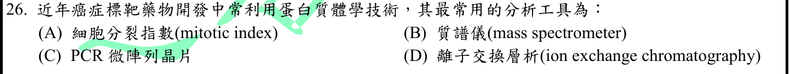
本地原卷PDF28 · 官方混科卷PDF28 · 官方原答案PDF1最下方生物表 · 釋疑PDF10
官方採計：B 原答案：B
同年度釋疑維持原答案B
主分類：Ch21 Genomes and Their Evolution
21.2 / Understanding Genes and Gene Expression at the Systems Level
目錄行1307；條目起始印刷頁446；實際目錄 PDF40
主分類理由：21.2 / Understanding Genes and Gene Expression at the Systems Level：蛋白質體的全局鑑定與表現分析屬系統層次理解基因產物。
次分類理由：無另列最小次條目；問題是蛋白體工具辨識，NCI質譜技術及官方維持B直接支援；以系統層次蛋白體分析分類，不改成免疫治療。
科學說明：採B且維持。質譜為蛋白體鑑定、定量及修飾分析核心工具，層析可配合分離；癌症藥物只是用途情境，不主歸腫瘤免疫。
來源涵蓋範圍：Campbell支援所列分類原理；具名物種地點、現代技術與科學界線由列示來源補足，實讀範圍見來源紀錄。
教材正文：印刷446／PDF495、印刷447／PDF496
補充來源：S26
另行比較：癌症字眼是否導致錯歸Cancer and Immunity
問題是蛋白體工具辨識，NCI質譜技術及官方維持B直接支援；以系統層次蛋白體分析分類，不改成免疫治療。
結論：證據確認，分類疑義已解決。完整覆核紀錄
Q27 · 43.4 / Cancer and Immunity 正式分類
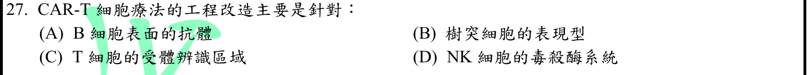
本地原卷PDF28 · 官方混科卷PDF28 · 官方原答案PDF1最下方生物表 · 已核對生物釋疑PDF8下方–13
官方採計：C 原答案：C
未列於本輪取得114生物釋疑PDF8下方至13；依同年度答案PDF1最下方生物表採計
主分類：Ch43 The Immune System
43.4 / Cancer and Immunity
目錄行2930；條目起始印刷頁974；實際目錄 PDF47
次分類：Ch20 DNA Tools and Biotechnology
20.4 / Medical Applications
目錄行1274；條目起始印刷頁433；實際目錄 PDF40
主分類理由：43.4 / Cancer and Immunity：主題是工程化免疫細胞辨识及攻擊癌細胞。
次分類理由：20.4 / Medical Applications：導入嵌合受體的醫學基因工程應用為必要次面向
科學說明：採C。CAR-T主要使T細胞表達嵌合抗原受體，具有抗原辨識及胞內訊號域，不能狹義化為只修改天然TCR一小段。
來源涵蓋範圍：Campbell支援所列分類原理；具名物種地點、現代技術與科學界線由列示來源補足，實讀範圍見來源紀錄。
教材正文：印刷433／PDF482、印刷434／PDF483、印刷974／PDF1023
補充來源：S27
另行比較：醫學基因工程與免疫療法主次是否反轉
題以CAR-T抗原辨識改造為焦點，癌症免疫主目，醫學工程次目；保留嵌合受體非僅天然TCR編輯的措辭限制。
結論：證據確認，分類疑義已解決。完整覆核紀錄
Q28 · 17.3 / Split Genes and RNA Splicing 正式分類
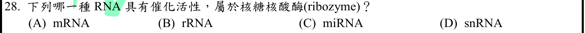
本地原卷PDF28 · 官方混科卷PDF28 · 官方原答案PDF1最下方生物表 · 釋疑PDF10
官方採計：B/D 原答案：B
同年度釋疑改為B/D皆可；組合包PDF32更正表一致
主分類：Ch17 Gene Expression: From Gene to Protein
17.3 / Split Genes and RNA Splicing
目錄行1062；條目起始印刷頁345；實際目錄 PDF39
次分類：Ch17 Gene Expression: From Gene to Protein
17.4 / Molecular Components of Translation
目錄行1069；條目起始印刷頁348；實際目錄 PDF39
主分類理由：17.3 / Split Genes and RNA Splicing：核酶與剪接體RNA催化在此最小目錄下直接解釋snRNA採計更正。
次分類理由：17.4 / Molecular Components of Translation：rRNA在核糖體催化肽鍵形成，補足另一正式採計答案
科學說明：原B，官方更正B/D皆可，組合包32頁為BD。rRNA與部分剪接體snRNA具催化角色，非所有snRNA都催化。題文「核糖核酸酶(ribozyme)」中文不精確，核酶不等於專門水解RNA的ribonuclease，原字不改。
來源涵蓋範圍：Campbell正文支援分類原理；題目限定及來源措辭差異保留於科學說明。
教材正文：印刷345／PDF394、印刷346／PDF395、印刷347／PDF396、印刷348／PDF397、印刷349／PDF398、印刷350／PDF399
補充來源：本題未另列課本外來源
另行比較：是否因原答案rRNA而排除snRNA
346圖17.13明寫小RNA催化剪接，350核糖體RNA催化；官方B/D與組合包相符。兩個Ch17葉節點均存，不把ribozyme錯譯當科學定義。
結論：證據確認，分類疑義已解決。完整覆核紀錄
Q29 · 31.1 / Body Structure 正式分類
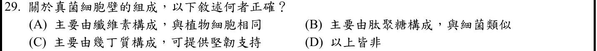
本地原卷PDF28 · 官方混科卷PDF28 · 官方原答案PDF1最下方生物表 · 釋疑PDF11
官方採計：C 原答案：C
同年度釋疑維持原答案C
主分類：Ch31 Fungi
31.1 / Body Structure
目錄行1969；條目起始印刷頁655；實際目錄 PDF43
主分類理由：31.1 / Body Structure：真菌細胞壁幾丁質與菌體構造為直接考點。
次分類理由：無另列最小次條目；656支持結構性幾丁質；釋疑亦談葡聚糖，官方C不代表 universal mass fraction。保持菌體構造主目及定量保留意見，分類疑義已解。
科學說明：採C且維持。幾丁質是重要支持成分，但不同真菌細胞壁也有大量β葡聚糖等，不能將「主要」當成一律質量最高。官方引書版本與本地12e不同，分開保存不換頁碼。
來源涵蓋範圍：Campbell正文支援分類原理；題目限定及來源措辭差異保留於科學說明。
教材正文：印刷655／PDF704、印刷656／PDF705
補充來源：本題未另列課本外來源
另行比較：幾丁質是否在所有真菌定量占最多
656支持結構性幾丁質；釋疑亦談葡聚糖，官方C不代表 universal mass fraction。保持菌體構造主目及定量保留意見，分類疑義已解。
結論：證據確認，分類疑義已解決。完整覆核紀錄
Q30 · 45.3 / Parathyroid Hormone and Vitamin D: Control of Blood Calcium 正式分類
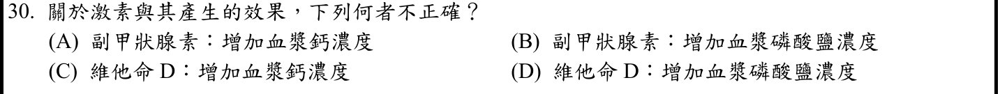
本地原卷PDF29 · 官方混科卷PDF29 · 官方原答案PDF1最下方生物表 · 已核對生物釋疑PDF8下方–13
官方採計：B 原答案：B
未列於本輪取得114生物釋疑PDF8下方至13；依同年度答案PDF1最下方生物表採計
主分類：Ch45 Hormones and the Endocrine System
45.3 / Parathyroid Hormone and Vitamin D: Control of Blood Calcium
目錄行3036；條目起始印刷頁1011；實際目錄 PDF47
主分類理由：45.3 / Parathyroid Hormone and Vitamin D: Control of Blood Calcium：PTH與維生素D共同調控血鈣，並需區分血磷方向。
次分類理由：無另列最小次條目；CSU腎排磷效應釐清通常淨降磷，故B不正確；主PTH維生素D血鈣目錄，磷補證已列，未虛稱Campbell頁完整講磷。
科學說明：採B為不正確。正常腎功能下PTH增鈣且促排磷，淨效應降低血磷；維生素D促腸道吸收鈣磷。Campbell主述鈣，磷方向由CSU作者教材補足。
來源涵蓋範圍：Campbell支援所列分類原理；具名物種地點、現代技術與科學界線由列示來源補足，實讀範圍見來源紀錄。
教材正文：印刷1011／PDF1060、印刷1012／PDF1061
補充來源：S30
另行比較：骨吸收釋磷是否可支持PTH升血磷
CSU腎排磷效應釐清通常淨降磷，故B不正確；主PTH維生素D血鈣目錄，磷補證已列，未虛稱Campbell頁完整講磷。
結論：證據確認，分類疑義已解決。完整覆核紀錄
Q31 · 48.2 / Modeling the Resting Potential 正式分類
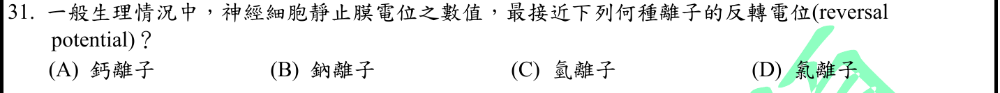
本地原卷PDF29 · 官方混科卷PDF29 · 官方原答案PDF1最下方生物表 · 已核對生物釋疑PDF8下方–13
官方採計：D 原答案：D
未列於本輪取得114生物釋疑PDF8下方至13；依同年度答案PDF1最下方生物表採計
主分類：Ch48 Neurons, Synapses, and Signaling
48.2 / Modeling the Resting Potential
目錄行3196；條目起始印刷頁1071；實際目錄 PDF48
次分類：Ch48 Neurons, Synapses, and Signaling
48.2 / Formation of the Resting Potential
目錄行3193；條目起始印刷頁1070；實際目錄 PDF48
主分類理由：48.2 / Modeling the Resting Potential：利用各離子平衡／反轉電位比較靜止膜電位的模型。
次分類理由：48.2 / Formation of the Resting Potential：靜止膜電位由離子梯度、通透性與泵維持的形成機制提供前提
科學說明：採D。四選项没有K，Cl反轉電位在典型成熟神經元模型較接近靜止值；不能據此說Cl對靜止電位的貢獻最大，也不能忽略細胞年齡與Cl梯度差異。
來源涵蓋範圍：Campbell支援所列分類原理；具名物種地點、現代技術與科學界線由列示來源補足，實讀範圍見來源紀錄。
教材正文：印刷1070／PDF1119、印刷1071／PDF1120、印刷1072／PDF1121、印刷1078／PDF1127
補充來源：S31
另行比較：K最影響靜止電位是否需選题未列之項
重看選项只有Ca/Na/H/Cl；典型Cl反轉近靜止數值，選D不等於Cl最大通透性。主平衡模型次形成機制適合。
結論：證據確認，分類疑義已解決。完整覆核紀錄
Q32 · 49.1 / Organization of the Vertebrate Nervous System 正式分類
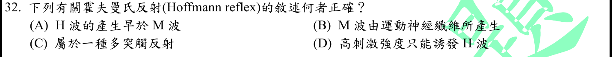
本地原卷PDF29 · 官方混科卷PDF29 · 官方原答案PDF1最下方生物表 · 已核對生物釋疑PDF8下方–13
官方採計：B 原答案：B
未列於本輪取得114生物釋疑PDF8下方至13；依同年度答案PDF1最下方生物表採計
主分類：Ch49 Nervous Systems
49.1 / Organization of the Vertebrate Nervous System
目錄行3242；條目起始印刷頁1087；實際目錄 PDF48
次分類：Ch48 Neurons, Synapses, and Signaling
48.1 / Introduction to Information Processing
目錄行3186；條目起始印刷頁1068；實際目錄 PDF48
主分類理由：49.1 / Organization of the Vertebrate Nervous System：H反射的脊髓迴路屬脊椎神經系統組織及反射。
次分類理由：48.1 / Introduction to Information Processing：感覺輸入與運動輸出的區分解釋H與M產生路徑
科學說明：採B。M為直接刺激運動軸突引發的肌肉複合反應，早於經Ia傳入及脊髓反射的H；M波不是從神經軸突本身量到的肌電波，高強度M增大且H可因逆行碰撞降低。
來源涵蓋範圍：Campbell支援所列分類原理；具名物種地點、現代技術與科學界線由列示來源補足，實讀範圍見來源紀錄。
教材正文：印刷1068／PDF1117、印刷1069／PDF1118、印刷1087／PDF1136、印刷1088／PDF1137
補充來源：S32
另行比較：M波是神經電位還是肌肉反應、H是否更早
直接運動軸突募集先產M肌電，H經感覺脊髓路徑較晚；高刺激H可被碰撞壓低，主脊髓反射組織加信息傳遞次目。
結論：證據確認，分類疑義已解決。完整覆核紀錄
Q33 · 50.5 / Other Types of Muscle 正式分類
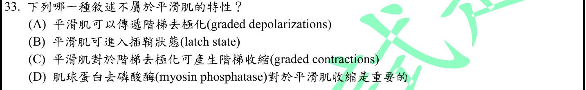
本地原卷PDF29 · 官方混科卷PDF29 · 官方原答案PDF1最下方生物表 · 釋疑PDF12
官方採計：D 原答案：D
同年度釋疑維持原答案D
主分類：Ch50 Sensory and Motor Mechanisms
50.5 / Other Types of Muscle
目錄行3384；條目起始印刷頁1131；實際目錄 PDF49
主分類理由：50.5 / Other Types of Muscle：平滑肌的階梯反應、latch與肌球蛋白磷酸化是直接肌肉類型特性。
次分類理由：無另列最小次條目；官方對比收縮MLCK與鬆弛MLCP已保存，Hai模型明示去磷酸化latch維持張力；分類無疑但官方「不重要」式概括不可科學化，已註廣義歧義。
科學說明：官方採D且維持，採計理由對比MLCK收縮與MLCP鬆弛。但去磷酸化也參與latch與張力調節，D廣義「對收縮重要」有歧義；不把官方維持答案改寫成MLCP毫無調節作用。
來源涵蓋範圍：Campbell支援所列分類原理；具名物種地點、現代技術與科學界線由列示來源補足，實讀範圍見來源紀錄。
教材正文：印刷1131／PDF1180、印刷1132／PDF1181
補充來源：S33
另行比較：官方D與MLCP參與latch矛盾是否被掩蓋
官方對比收縮MLCK與鬆弛MLCP已保存，Hai模型明示去磷酸化latch維持張力；分類無疑但官方「不重要」式概括不可科學化，已註廣義歧義。
結論：證據確認，分類疑義已解決。完整覆核紀錄
Q34 · 50.5 / Other Types of Muscle 正式分類
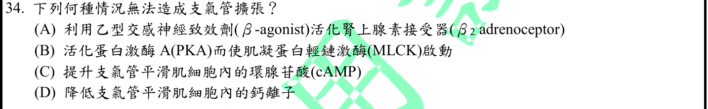
本地原卷PDF29 · 官方混科卷PDF29 · 官方原答案PDF1最下方生物表 · 釋疑PDF12
官方採計：B 原答案：B
同年度釋疑維持原答案B
主分類：Ch50 Sensory and Motor Mechanisms
50.5 / Other Types of Muscle
目錄行3384；條目起始印刷頁1131；實際目錄 PDF49
次分類：Ch11 Cell Communication
11.3 / Small Molecules and Ions as Second Messengers
文字目錄漏and Ions；實際PDF完整題名優先，文字來源仍保留。 目錄行724；條目起始印刷頁223；實際目錄 PDF38
主分類理由：50.5 / Other Types of Muscle：氣道擴張由平滑肌收縮／舒張機制直接決定。
次分類理由：11.3 / Small Molecules and Ions as Second Messengers：β2→cAMP→PKA及Ca第二訊息解釋各選项的訊號方向
科學說明：採B且維持。Ca-calmodulin活化MLCK促收縮；β致效劑與cAMP/PKA通常促鬆弛。選項把PKA與「使MLCK啟動」連成錯誤因果，不能據此否認PKA促舒張，且機制不只一個底物。
來源涵蓋範圍：Campbell支援所列分類原理；具名物種地點、現代技術與科學界線由列示來源補足，實讀範圍見來源紀錄。
教材正文：印刷223／PDF272、印刷224／PDF273、印刷1131／PDF1180、印刷1132／PDF1181
補充來源：S34
另行比較：PKA促鬆弛與B說使MLCK啟動是否被誤讀
B是一整條錯因果，不能拆成PKA本身不舒張；本地Ca-calmodulin及Morgan研究交叉支持，主平滑肌次第二訊息。
結論：證據確認，分類疑義已解決。完整覆核紀錄
Q35 · 41.3 / Digestion in the Stomach 正式分類
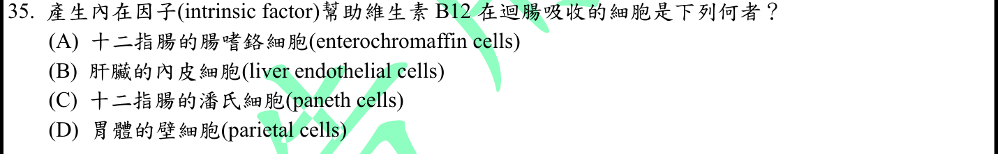
本地原卷PDF29 · 官方混科卷PDF29 · 官方原答案PDF1最下方生物表 · 已核對生物釋疑PDF8下方–13
官方採計：D 原答案：D
未列於本輪取得114生物釋疑PDF8下方至13；依同年度答案PDF1最下方生物表採計
主分類：Ch41 Animal Nutrition
41.3 / Digestion in the Stomach
目錄行2711；條目起始印刷頁907；實際目錄 PDF46
次分類：Ch41 Animal Nutrition
41.3 / Absorption in the Small Intestine
目錄行2717；條目起始印刷頁909；實際目錄 PDF46
主分類理由：41.3 / Digestion in the Stomach：問題首先辨識胃腺分泌細胞，主歸胃消化。
次分類理由：41.3 / Absorption in the Small Intestine：內在因子協助B12小腸吸收是分泌物作用終點
科學說明：採D。胃壁細胞分泌內在因子而使B12得於迴腸吸收；Campbell支援壁細胞胃腺結構，內在因子細節由OpenStax核對。
來源涵蓋範圍：Campbell支援所列分類原理；具名物種地點、現代技術與科學界線由列示來源補足，實讀範圍見來源紀錄。
教材正文：印刷907／PDF956、印刷908／PDF957、印刷909／PDF958、印刷910／PDF959
補充來源：S35
另行比較：吸收發生迴腸是否應主歸小腸
題實際问來源細胞，壁細胞是胃；小腸吸收作次目。內在因子並非Campbell所引頁明載，OpenStax已補足該細節。
結論：證據確認，分類疑義已解決。完整覆核紀錄
Q36 · 49.2 / Arousal and Sleep 正式分類
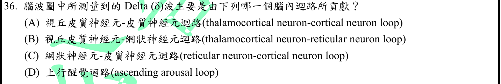
本地原卷PDF29 · 官方混科卷PDF29 · 官方原答案PDF1最下方生物表 · 已核對生物釋疑PDF8下方–13
官方採計：A 原答案：A
未列於本輪取得114生物釋疑PDF8下方至13；依同年度答案PDF1最下方生物表採計
主分類：Ch49 Nervous Systems
49.2 / Arousal and Sleep
目錄行3255；條目起始印刷頁1094；實際目錄 PDF48
主分類理由：49.2 / Arousal and Sleep：題問深睡眠delta腦波來源迴路，主歸醒覺與睡眠。
次分類理由：無另列最小次條目；Purves明示慢波視丘皮質同步及網狀核調節，支持A為題設最佳；不以B紡錘機制否定其參與全部睡眠節律。
科學說明：採A。視丘皮質與皮質同步振盪支持慢波；網狀核也參與節律調節，B較偏紡錘波迴路，不能主張delta單由互相隔絕的一條迴路產生。
來源涵蓋範圍：Campbell支援所列分類原理；具名物種地點、現代技術與科學界線由列示來源補足，實讀範圍見來源紀錄。
教材正文：印刷1092／PDF1141、印刷1093／PDF1142、印刷1094／PDF1143
補充來源：S36
另行比較：視丘網狀迴路與視丘皮質迴路是否互斥
Purves明示慢波視丘皮質同步及網狀核調節，支持A為題設最佳；不以B紡錘機制否定其參與全部睡眠節律。
結論：證據確認，分類疑義已解決。完整覆核紀錄
Q37 · 49.2 / Arousal and Sleep 正式分類
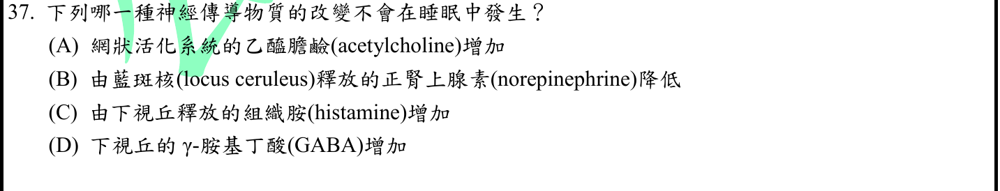
本地原卷PDF29 · 官方混科卷PDF29 · 官方原答案PDF1最下方生物表 · 已核對生物釋疑PDF8下方–13
官方採計：C 原答案：C
未列於本輪取得114生物釋疑PDF8下方至13；依同年度答案PDF1最下方生物表採計
主分類：Ch49 Nervous Systems
49.2 / Arousal and Sleep
目錄行3255；條目起始印刷頁1094；實際目錄 PDF48
次分類：Ch48 Neurons, Synapses, and Signaling
48.4 / Neurotransmitters
目錄行3231；條目起始印刷頁1080；實際目錄 PDF48
主分類理由：49.2 / Arousal and Sleep：不同睡眠期的調質變化是睡眠機制問題。
次分類理由：48.4 / Neurotransmitters：ACh、NE、GABA的神經傳遞功能是判讀選项的分子基礎
科學說明：採C。組織胺系統通常促醒，睡眠中下降；ACh在NREM減少但REM可重新升高，故原題籠統「睡眠中」必須保留分期界線。NE、GABA變化亦依核團與分期，不能全腦一律化。
來源涵蓋範圍：Campbell支援所列分類原理；具名物種地點、現代技術與科學界線由列示來源補足，實讀範圍見來源紀錄。
教材正文：印刷1080／PDF1129、印刷1081／PDF1130、印刷1094／PDF1143、印刷1095／PDF1144
補充來源：S37
另行比較：ACh增加是否在任何睡眠都不會發生
NREM與REM不同，A可能對REM成立，C組織胺增加不符典型睡眠；記錄分期和核團限制，避免睡眠全或無斷言。
結論：證據確認，分類疑義已解決。完整覆核紀錄
Q38 · 49.2 / Arousal and Sleep 正式分類
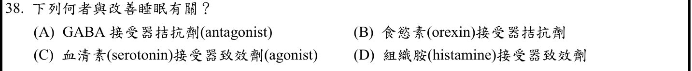
本地原卷PDF30 · 官方混科卷PDF30 · 官方原答案PDF1最下方生物表 · 釋疑PDF12
官方採計：B 原答案：B
同年度釋疑維持原答案B
主分類：Ch49 Nervous Systems
49.2 / Arousal and Sleep
目錄行3255；條目起始印刷頁1094；實際目錄 PDF48
主分類理由：49.2 / Arousal and Sleep：藉抑制促醒系統改善睡眠，主歸醒覺睡眠。
次分類理由：無另列最小次條目；再核題圖及釋疑12，兩字樣不同已保存；B有原始試驗藥理支持。血清素亞型未指定不另加肯定結論。
科學說明：採B且維持。orexin受體拮抗劑可促睡眠。題本C是血清素受體「致效劑」，釋疑改寫為「拮抗劑」，原始二者分開記錄；血清素效應需受體亞型，不能籠統斷定皆促睡或皆促醒。
來源涵蓋範圍：Campbell支援所列分類原理；具名物種地點、現代技術與科學界線由列示來源補足，實讀範圍見來源紀錄。
教材正文：印刷1094／PDF1143、印刷1095／PDF1144
補充來源：S38
另行比較：釋疑C把致效改寫為拮抗是否修改題幹
再核題圖及釋疑12，兩字樣不同已保存；B有原始試驗藥理支持。血清素亞型未指定不另加肯定結論。
結論：證據確認，分類疑義已解決。完整覆核紀錄
Q39 · 49.2 / Arousal and Sleep 正式分類
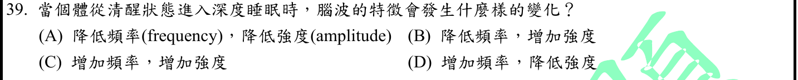
本地原卷PDF30 · 官方混科卷PDF30 · 官方原答案PDF1最下方生物表 · 已核對生物釋疑PDF8下方–13
官方採計：B 原答案：B
未列於本輪取得114生物釋疑PDF8下方至13；依同年度答案PDF1最下方生物表採計
主分類：Ch49 Nervous Systems
49.2 / Arousal and Sleep
目錄行3255；條目起始印刷頁1094；實際目錄 PDF48
主分類理由：49.2 / Arousal and Sleep：直接比較清醒與深睡眠EEG波形。
次分類理由：無另列最小次條目；深慢波的低頻高振幅是群體同步，與單纖維全或無振幅不同；因此睡眠主目足夠，無須添加動作電位条目。
科學說明：採B。典型深度NREM腦波頻率降低、振幅增加；原文amplitude譯「強度」保留，科學說明用振幅，且不是單一神經元動作電位幅度增大。
來源涵蓋範圍：Campbell支援所列分類原理；具名物種地點、現代技術與科學界線由列示來源補足，實讀範圍見來源紀錄。
教材正文：印刷1094／PDF1143、印刷1095／PDF1144
補充來源：S36
另行比較：EEG振幅是否誤解為神經動作電位強度
深慢波的低頻高振幅是群體同步，與單纖維全或無振幅不同；因此睡眠主目足夠，無須添加動作電位条目。
結論：證據確認，分類疑義已解決。完整覆核紀錄
Q40 · 45.3 / Hormones and Biological Rhythms 正式分類
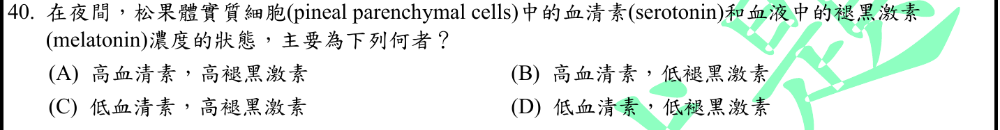
本地原卷PDF30 · 官方混科卷PDF30 · 官方原答案PDF1最下方生物表 · 釋疑PDF12
官方採計：C 原答案：C
同年度釋疑維持原答案C
主分類：Ch45 Hormones and the Endocrine System
45.3 / Hormones and Biological Rhythms
目錄行3045；條目起始印刷頁1015；實際目錄 PDF47
次分類：Ch49 Nervous Systems
49.2 / Biological Clock Regulation
目錄行3258；條目起始印刷頁1094；實際目錄 PDF48
主分類理由：45.3 / Hormones and Biological Rhythms：夜間松果體褪黑激素分泌是生物節律激素題。
次分類理由：49.2 / Biological Clock Regulation：晝夜時鐘對睡眠與激素分泌的時間組織提供次面向
科學說明：採C且維持。夜間褪黑激素高；常用大鼠松果體模式中血清素隨代謝轉換較低。不同物種、夜間取樣點可有差異，不能把所有夜間細胞內血清素固定為同一濃度。
來源涵蓋範圍：Campbell支援所列分類原理；具名物種地點、現代技術與科學界線由列示來源補足，實讀範圍見來源紀錄。
教材正文：印刷1015／PDF1064、印刷1094／PDF1143、印刷1095／PDF1144
補充來源：S40
另行比較：夜間血清素降低是否普遍且即時
Campbell只直接支持夜間melatonin，研究補大鼠serotonin日夜变化；按官方C採計并明示物種時間界線，主節律激素次神經時鐘。
結論：證據確認，分類疑義已解決。完整覆核紀錄
Q41 · 42.3 / Blood Flow Velocity 正式分類
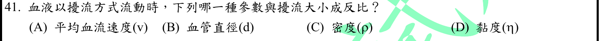
本地原卷PDF30 · 官方混科卷PDF30 · 官方原答案PDF1最下方生物表 · 已核對生物釋疑PDF8下方–13
官方採計：D 原答案：D
未列於本輪取得114生物釋疑PDF8下方至13；依同年度答案PDF1最下方生物表採計
主分類：Ch42 Circulation and Gas Exchange
42.3 / Blood Flow Velocity
目錄行2786；條目起始印刷頁930；實際目錄 PDF46
主分類理由：42.3 / Blood Flow Velocity：速度、管徑、黏度如何影響血流型態，主歸血流速度。
次分類理由：無另列最小次條目；依雷諾數分母η核對D；保持「傾向」而非實際紊流能量反比，血流速度條目比血壓更直接。
科學說明：採D。Re=v×d×ρ／η，黏度在分母；題稱「擾流大小」較粗略，嚴謹地說公式比較擾流傾向與臨界条件。
來源涵蓋範圍：Campbell支援所列分類原理；具名物種地點、現代技術與科學界線由列示來源補足，實讀範圍見來源紀錄。
教材正文：印刷929／PDF978、印刷930／PDF979、印刷931／PDF980
補充來源：S41
另行比較：擾流大小與Re是否同一可測參數
依雷諾數分母η核對D；保持「傾向」而非實際紊流能量反比，血流速度條目比血壓更直接。
結論：證據確認，分類疑義已解決。完整覆核紀錄
Q42 · 41.3 / Digestion in the Stomach 正式分類
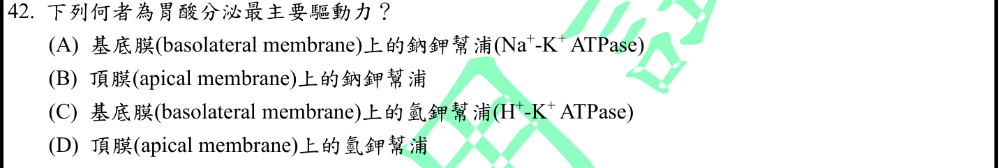
本地原卷PDF30 · 官方混科卷PDF30 · 官方原答案PDF1最下方生物表 · 已核對生物釋疑PDF8下方–13
官方採計：D 原答案：D
未列於本輪取得114生物釋疑PDF8下方至13；依同年度答案PDF1最下方生物表採計
主分類：Ch41 Animal Nutrition
41.3 / Digestion in the Stomach
目錄行2711；條目起始印刷頁907；實際目錄 PDF46
次分類：Ch07 Membrane Structure and Function
7.4 / The Need for Energy in Active Transport
目錄行450；條目起始印刷頁136；實際目錄 PDF36
主分類理由：41.3 / Digestion in the Stomach：辨認壁細胞朝胃腔排H的酸分泌機制。
次分類理由：7.4 / The Need for Energy in Active Transport：逆濃度梯度ATP幫浦是原理，保留主動運輸次目
科學說明：採D。頂膜H/K ATPase直接把H分泌到胃腔；基底側Na/K ATPase維持梯度但非題問最直接驅動幫浦。
來源涵蓋範圍：Campbell正文支援分類原理；題目限定及來源措辭差異保留於科學說明。
教材正文：印刷136／PDF185、印刷137／PDF186、印刷907／PDF956、印刷908／PDF957
補充來源：本題未另列課本外來源
另行比較：基底側Na/K泵是支持還是直接排酸
原頁明列頂膜H/K ATPase选项D，Campbell壁細胞ATP排H吻合；主胃分泌次主動運輸，沒有選錯膜側。
結論：證據確認，分類疑義已解決。完整覆核紀錄
Q43 · 42.2 / The Mammalian Heart: A Closer Look 正式分類
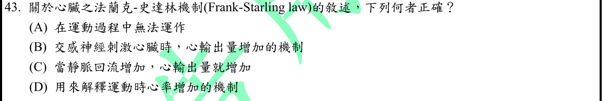
本地原卷PDF30 · 官方混科卷PDF30 · 官方原答案PDF1最下方生物表 · 已核對生物釋疑PDF8下方–13
官方採計：C 原答案：C
未列於本輪取得114生物釋疑PDF8下方至13；依同年度答案PDF1最下方生物表採計
主分類：Ch42 Circulation and Gas Exchange
42.2 / The Mammalian Heart: A Closer Look
目錄行2773；條目起始印刷頁926；實際目錄 PDF46
主分類理由：42.2 / The Mammalian Heart: A Closer Look：心室充盈、搏出量與心輸出量關係是核心。
次分類理由：無另列最小次條目；區分回流→舒張末容積→搏出量的內在調節與交感改变收縮性；C成立於生理範圍，主心臟泵功能。
科學說明：採C。生理範圍內靜脈回流增加使前負荷與搏出量上升；Frank-Starling是心肌內在長度反應，交感可另調變而非本機制定義，不等於心率增加。
來源涵蓋範圍：Campbell支援所列分類原理；具名物種地點、現代技術與科學界線由列示來源補足，實讀範圍見來源紀錄。
教材正文：印刷926／PDF975、印刷927／PDF976、印刷928／PDF977
補充來源：S43
另行比較：心率或交感增力是否就是Frank-Starling
區分回流→舒張末容積→搏出量的內在調節與交感改变收縮性；C成立於生理範圍，主心臟泵功能。
結論：證據確認，分類疑義已解決。完整覆核紀錄
Q44 · 42.2 / Maintaining the Heart’s Rhythmic Beat 正式分類
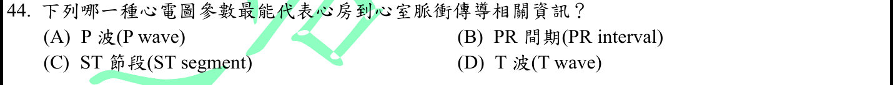
本地原卷PDF30 · 官方混科卷PDF30 · 官方原答案PDF1最下方生物表 · 已核對生物釋疑PDF8下方–13
官方採計：B 原答案：B
未列於本輪取得114生物釋疑PDF8下方至13；依同年度答案PDF1最下方生物表採計
主分類：Ch42 Circulation and Gas Exchange
42.2 / Maintaining the Heart’s Rhythmic Beat
文字目錄寫Rhythms；PDF46目錄及正文928為Rhythmic Beat，採實際PDF名稱且保留文字來源。 目錄行2776；條目起始印刷頁928；實際目錄 PDF46
主分類理由：42.2 / Maintaining the Heart’s Rhythmic Beat：心臟節律傳導及ECG中房室傳導延遲為直接考點。
次分類理由：無另列最小次條目；從P起至QRS起完整定義支持B；最小節律目錄包含房室延遲與ECG，沒有把PR interval與segment混用。
科學說明：採B。PR間期從P起點到QRS起點，涵蓋心房至心室啟動；P僅心房去極化、T為心室再極化，ST非房室傳導時間。
來源涵蓋範圍：Campbell支援所列分類原理；具名物種地點、現代技術與科學界線由列示來源補足，實讀範圍見來源紀錄。
教材正文：印刷928／PDF977、印刷929／PDF978
補充來源：S44
另行比較：PR只是AV結時間或包括心房傳播
從P起至QRS起完整定義支持B；最小節律目錄包含房室延遲與ECG，沒有把PR interval與segment混用。
結論：證據確認，分類疑義已解決。完整覆核紀錄
Q45 · 42.2 / Maintaining the Heart’s Rhythmic Beat 正式分類
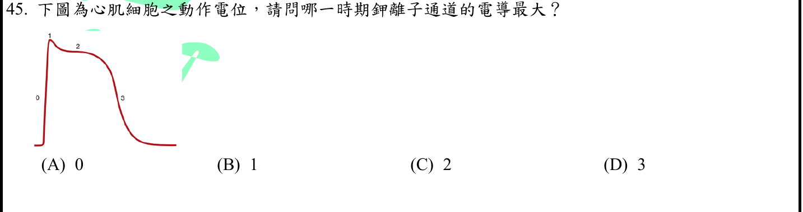
本地原卷PDF30 · 官方混科卷PDF30 · 官方原答案PDF1最下方生物表 · 已核對生物釋疑PDF8下方–13
官方採計：D 原答案：D
未列於本輪取得114生物釋疑PDF8下方至13；依同年度答案PDF1最下方生物表採計
主分類：Ch42 Circulation and Gas Exchange
42.2 / Maintaining the Heart’s Rhythmic Beat
文字目錄寫Rhythms；PDF46目錄及正文928為Rhythmic Beat，採實際PDF名稱且保留文字來源。 目錄行2776；條目起始印刷頁928；實際目錄 PDF46
次分類：Ch48 Neurons, Synapses, and Signaling
48.3 / Generation of Action Potentials: A Closer Look
目錄行3209；條目起始印刷頁1073；實際目錄 PDF48
主分類理由：42.2 / Maintaining the Heart’s Rhythmic Beat：完整原圖是心肌含平台的動作電位，優先歸心臟節律。
次分類理由：48.3 / Generation of Action Potentials: A Closer Look：電壓門控K流與再極化是分子原理，但神經元圖不能替代心肌原圖
科學說明：採D即圖中3。所給0–3比較中，第3期K電導增加、Ca電導下降導致再極化。第4期未列選項；不同K通道時程不同，不說所有K通道同時達絕對峰值。
來源涵蓋範圍：Campbell支援所列分類原理；具名物種地點、現代技術與科學界線由列示來源補足，實讀範圍見來源紀錄。
教材正文：印刷928／PDF977、印刷929／PDF978、印刷1073／PDF1122、印刷1074／PDF1123、印刷1075／PDF1124、印刷1131／PDF1180
補充來源：S45
另行比較：神經元再極化圖能否替代心肌平台圖、裁圖是否完整
重新實看Q45完整圖0/1/2/3及A–D，平台與下降段皆保留。第3期高K流符合心肌專門資料，主心律次通道原理。
結論：證據確認，分類疑義已解決。完整覆核紀錄
Q46 · 42.3 / Blood Pressure 正式分類
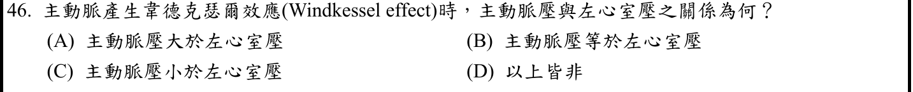
本地原卷PDF31 · 官方混科卷PDF31 · 官方原答案PDF1最下方生物表 · 已核對生物釋疑PDF8下方–13
官方採計：A 原答案：A
未列於本輪取得114生物釋疑PDF8下方至13；依同年度答案PDF1最下方生物表採計
主分類：Ch42 Circulation and Gas Exchange
42.3 / Blood Pressure
目錄行2789；條目起始印刷頁930；實際目錄 PDF46
次分類：Ch42 Circulation and Gas Exchange
42.2 / The Mammalian Heart: A Closer Look
目錄行2773；條目起始印刷頁926；實際目錄 PDF46
主分類理由：42.3 / Blood Pressure：主動脈彈性回縮維持舒張壓是血壓條目的直接機制。
次分類理由：42.2 / The Mammalian Heart: A Closer Look：心室舒張與半月瓣關閉時的壓差補足比較
科學說明：採A。Windkessel回縮供流的舒張期主動脈壓高於左室，主動脈瓣閉合；題未明寫時相，不能把A擴張為射血期或全心動週期皆成立。
來源涵蓋範圍：Campbell正文支援分類原理；題目限定及來源措辭差異保留於科學說明。
教材正文：印刷927／PDF976、印刷930／PDF979、印刷931／PDF980
補充來源：本題未另列課本外來源
另行比較：A是否對整個心動週期都成立
927瓣膜與930動脈回縮表示舒張供流時主動脈高於左室；保留題漏時相而不普遍化，血壓主目及心動週期次目必要。
結論：證據確認，分類疑義已解決。完整覆核紀錄
Q47 · 42.2 / Maintaining the Heart’s Rhythmic Beat 正式分類
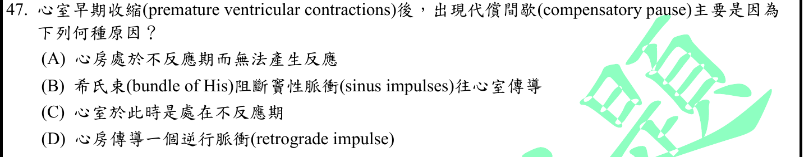
本地原卷PDF31 · 官方混科卷PDF31 · 官方原答案PDF1最下方生物表 · 已核對生物釋疑PDF8下方–13
官方採計：C 原答案：C
未列於本輪取得114生物釋疑PDF8下方至13；依同年度答案PDF1最下方生物表採計
主分類：Ch42 Circulation and Gas Exchange
42.2 / Maintaining the Heart’s Rhythmic Beat
文字目錄寫Rhythms；PDF46目錄及正文928為Rhythmic Beat，採實際PDF名稱且保留文字來源。 目錄行2776；條目起始印刷頁928；實際目錄 PDF46
次分類：Ch48 Neurons, Synapses, and Signaling
48.3 / Generation of Action Potentials: A Closer Look
目錄行3209；條目起始印刷頁1073；實際目錄 PDF48
主分類理由：42.2 / Maintaining the Heart’s Rhythmic Beat：PVC影響下一正常搏動的時序，主歸心臟節律。
次分類理由：48.3 / Generation of Action Potentials: A Closer Look：不反應期的離子通道恢復原理解釋為何刺激不能再啟動
科學說明：採C。典型未重設竇節律的PVC使下一竇性脈衝遇心室不反應期；插入型PVC或逆行重設可有不同間歇。不能把特定傳導束阻斷視為普遍主因。
來源涵蓋範圍：Campbell支援所列分類原理；具名物種地點、現代技術與科學界線由列示來源補足，實讀範圍見來源紀錄。
教材正文：印刷928／PDF977、印刷929／PDF978、印刷1073／PDF1122、印刷1074／PDF1123、印刷1075／PDF1124
補充來源：S47
另行比較：所有PVC都有完整代償間歇嗎
Utah教材列插入型及竇節律重設例外；题設已出现典型代償間歇，C的不反應期足以解釋，不能將例外刪掉。
結論：證據確認，分類疑義已解決。完整覆核紀錄
Q48 · 41.5 / Regulation of Digestion 正式分類
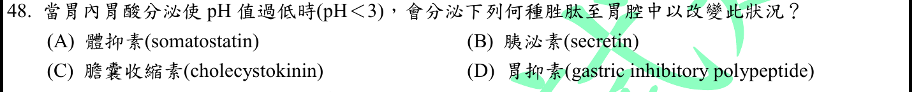
本地原卷PDF31 · 官方混科卷PDF31 · 官方原答案PDF1最下方生物表 · 釋疑PDF13
官方採計：A 原答案：A
同年度釋疑維持原答案A
主分類：Ch41 Animal Nutrition
41.5 / Regulation of Digestion
目錄行2740；條目起始印刷頁915；實際目錄 PDF46
次分類：Ch45 Hormones and the Endocrine System
45.1 / Intercellular Information Flow
目錄行2998；條目起始印刷頁1000；實際目錄 PDF47
主分類理由：41.5 / Regulation of Digestion：胃酸負回饋與胃腺分泌調節是直接考點。
次分類理由：45.1 / Intercellular Information Flow：D細胞局部作用屬旁分泌，必須保留細胞間訊號條目以指出分泌側別
科學說明：官方採A且維持。低pH促D細胞體抑素抑制G/ECL/壁細胞；原題寫「至胃腔中」，官方明說旁分泌，科學上主要局部間質訊號，二者不等同。原文與官方解釋並存，不改題掩蓋差異。
來源涵蓋範圍：Campbell支援所列分類原理；具名物種地點、現代技術與科學界線由列示來源補足，實讀範圍見來源紀錄。
教材正文：印刷915／PDF964、印刷916／PDF965、印刷1000／PDF1049、印刷1001／PDF1050
補充來源：S48、S35
另行比較：胃腔分泌與D細胞旁分泌是否相同
题图「至胃腔中」對照釋疑13「旁分泌」確為差異；體抑素酸回饋已補證，主消化調節次局部訊號，原詞不改。
結論：證據確認，分類疑義已解決。完整覆核紀錄
Q49 · 49.1 / The Peripheral Nervous System 正式分類
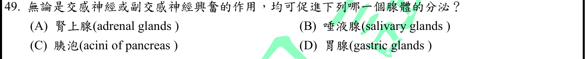
本地原卷PDF31 · 官方混科卷PDF31 · 官方原答案PDF1最下方生物表 · 釋疑PDF13
官方採計：B 原答案：B
同年度釋疑維持原答案B
主分類：Ch49 Nervous Systems
49.1 / The Peripheral Nervous System
目錄行3245；條目起始印刷頁1088；實際目錄 PDF48
次分類：Ch41 Animal Nutrition
41.3 / The Oral Cavity, Pharynx, and Esophagus
目錄行2708；條目起始印刷頁905；實際目錄 PDF46
主分類理由：49.1 / The Peripheral Nervous System：比較交感與副交感對腺體的調控，主歸周邊自主神經。
次分類理由：41.3 / The Oral Cavity, Pharynx, and Esophagus：唾液腺的消化分泌功能為具名效應器
科學說明：採B且維持。兩種刺激均可分泌唾液，通常副交感多水分、交感較多蛋白。Campbell圖49.7概括交感抑唾液而與本題更細的條件不全同；原始腮腺刺激研究支持雙向促分泌。官方亦保留胰腺交感效應有雙重性的說明。
來源涵蓋範圍：Campbell支援所列分類原理；具名物種地點、現代技術與科學界線由列示來源補足，實讀範圍見來源紀錄。
教材正文：印刷905／PDF954、印刷906／PDF955、印刷1088／PDF1137、印刷1089／PDF1138
補充來源：S49
另行比較：Campbell交感抑唾液簡圖是否推翻官方B
把圖49.7整體情境與腮腺刺激研究的量／蛋白成分区分，官方雙重促分泌採B並保留胰腺弱效複雜性。分類主自主神經次唾液器官。
結論：證據確認，分類疑義已解決。完整覆核紀錄
Q50 · 50.1 / Transmission 正式分類
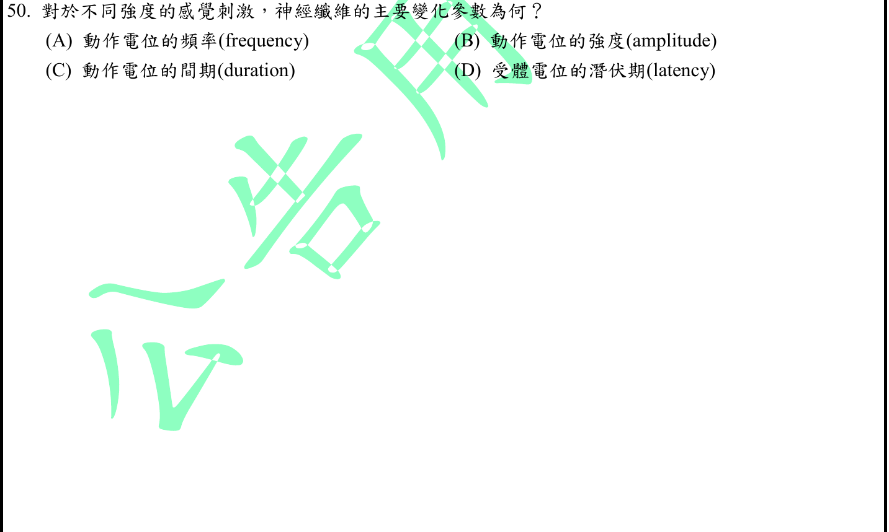
本地原卷PDF31 · 官方混科卷PDF31 · 官方原答案PDF1最下方生物表 · 已核對生物釋疑PDF8下方–13
官方採計：A 原答案：A
未列於本輪取得114生物釋疑PDF8下方至13；依同年度答案PDF1最下方生物表採計
主分類：Ch50 Sensory and Motor Mechanisms
50.1 / Transmission
目錄行3332；條目起始印刷頁1109；實際目錄 PDF49
次分類：Ch48 Neurons, Synapses, and Signaling
48.3 / Graded Potentials and Action Potentials
目錄行3206；條目起始印刷頁1073；實際目錄 PDF48
主分類理由：50.1 / Transmission：感覺訊號傳遞以動作電位頻率編碼刺激強度。
次分類理由：48.3 / Graded Potentials and Action Potentials：受體階梯電位與全或無動作電位幅度的区别解釋排除其餘選项
科學說明：採A。更強刺激可產生較大受體電位，於感覺神經轉成較高放電頻率；同一纖維動作電位幅度非強度編碼的主要變數。
來源涵蓋範圍：Campbell正文支援分類原理；題目限定及來源措辭差異保留於科學說明。
教材正文：印刷1073／PDF1122、印刷1074／PDF1123、印刷1108／PDF1157、印刷1109／PDF1158
補充來源：本題未另列課本外來源
另行比較：感覺受體電位幅度與神經動作電位頻率是否混淆
1109明示較大受體電位轉為更頻繁AP，1073全或無；A為题問神經纖維主要變化，感覺傳遞主目及階梯AP次目均留。
結論：證據確認，分類疑義已解決。完整覆核紀錄
目前篩選沒有符合的題目；本年度總數仍為50題。
補充來源
查證日期：2026-09-09。使用原始研究摘要、官方資料與作者教材，不宣稱所有出版商全文已取得。詳細界線見來源紀錄。
- S10 Ubelhart 2015 IgM/IgD；Chen 2009 secreted IgD
成熟B細胞可同時表現IgM與IgD受體；研究亦發現分泌型IgD，不能將IgD寫成唯一BCR或絕不分泌。
實讀範圍：本輪閱讀兩篇原始研究PubMed摘要，非全文；只補足官方與Campbell簡化界線。
原始來源1 · 原始來源2 - S13 CDC環境感染控制原始指引
指引把Pseudomonas aeruginosa列為革蘭氏陰性水源相關病原。
實讀範圍：閱讀Other Gram-Negative Bacterial Infections相關段落。
原始來源1 - S15 Bravo 2011 microbiota and GABA
小鼠L. rhamnosus研究觀察到中樞GABA受體表現與行為變化，迷走神經切斷後效應消失；不能推出腸道GABA直接穿過血腦障壁或人體療效。
實讀範圍：本輪PubMed摘要全文，非PMC全文；PMC工具遇驗證頁未繞過。
原始來源1 - S24 Alberts Molecular Biology of the Cell antibody diversity
類型轉換以重鏈恆定區的DNA重組改變效應類型，保留已組好的VDJ；與IgM/IgD共表現的RNA處理不同。
實讀範圍：閱讀Class switching段落與相鄰IgM/IgD說明；不採用舊版其他數據。
原始來源1 - S26 NCI Mass Spectrometry Section
NCI質譜平台提供蛋白鑑定、定量與磷酸化等修飾位點分析；層析可作前處理，不能因此取代質譜在本題的角色。
實讀範圍：閱讀平台功能及MS/MS分析流程相關文字；未實際操作儀器。
原始來源1 · 原始來源2 - S27 NCI CAR T Cells
將編碼特殊嵌合抗原受體的遺傳資訊導入T細胞，受體兼具辨識與細胞內訊號功能；不限於直接改造天然TCR。
實讀範圍：閱讀CAR工程原理相關正文；不涉及療程建議。
原始來源1 - S30 CSU Endocrine control of calcium and phosphate
PTH促進腎排磷；維生素D促進腸道鈣磷吸收。骨釋磷不等於PTH通常淨升高血磷。
實讀範圍：閱讀作者Richard Bowen教學正文與鈣磷調控表；部分重開連結失敗，使用本輪工具已返回相關正文。
原始來源1 · 原始來源2 - S31 Casey Henley Foundations of Neuroscience
教學模型Cl反轉電位約−65mV，Na約+60mV、K約−85mV；依題目沒有K的四選项選Cl，數值依細胞濃度而異。
實讀範圍：閱讀作者教材Equilibrium Potential及表3.1。
原始來源1 - S32 Klakowicz Baldwin Collins 2006
人體神經刺激研究區分直接運動軸突活化和感覺傳入引起的脊髓反射募集；M為直接運動反應，H為反射成分。
實讀範圍：閱讀原始研究摘要、Introduction及反射貢獻段落；不是人體實驗重作。
原始來源1 - S33 Hai and Murphy 1988 latch model
模型包含磷酸化循環橋及去磷酸化非循環橋；去磷酸化參與latch維持張力，不能說MLCP與平滑肌收縮調節無關。
實讀範圍：閱讀原始研究摘要；以模型範圍補足官方的簡化對比。
原始來源1 - S34 Morgan et al 2014 PKA airway relaxation
細胞與組織研究中抑制PKA會消除大部分β致效劑的鬆弛效應；PKA促鬆弛，不應寫成啟動MLCK而舒張。
實讀範圍：閱讀原始研究PubMed摘要及圖說；不把單一底物當成完整機制。
原始來源1 - S35 OpenStax Anatomy and Physiology 2e stomach
壁細胞分泌HCl與內在因子；後者為B12小腸吸收所需。胃內分泌細胞釋出激素至固有層間質。
實讀範圍：閱讀作者教材胃腺細胞相關段落；同時支持Q48分泌側別界線。
原始來源1 - S36 Purves Neuroscience Thalamocortical Interactions
慢波睡眠時視丘皮質與皮質神經元同步振盪；網狀核參與調節，睡眠紡錘波和delta不能當成同一訊號。
實讀範圍：閱讀作者教材Thalamocortical Interactions正文。
原始來源1 - S37 Krishnan et al 2016 sleep-stage network model
作者比較NREM、REM與清醒的神經調質組合，N2/N3組織胺與ACh降低而GABA增加，REM另有不同設定；睡眠不能概括成ACh一律下降。
實讀範圍：閱讀原始研究摘要、Figure 1–5圖說及工具返回段落；這是模型加記錄比較，非所有腦區的普遍定律。
原始來源1 - S38 Michelson et al 2014 suvorexant trial
原始隨機試驗把suvorexant界定為orexin受體拮抗劑並研究失眠睡眠改善，支持本題藥理辨識。
實讀範圍：閱讀摘要背景方法結果；不提供用藥建議或劑量。
原始來源1 - S40 1990 rat pineal serotonin metabolism
大鼠研究描述夜間NAT與褪黑激素高、血清素較低的日夜模式；不能擴張成所有物種所有夜間時点完全相同。
實讀範圍：閱讀原始研究摘要；與本地Campbell夜間褪黑激素分泌整合。
原始來源1 - S41 Klabunde CV Physiology turbulent flow
雷諾數Re=速度×直徑×密度／黏度，黏度在分母。Re衡量擾流傾向，非實測擾流強度處處線性反比。
實讀範圍：閱讀作者教材雷諾數公式及條件段落。
原始來源1 - S43 Klabunde CV Physiology Frank-Starling
增加靜脈回流與前負荷會在生理範圍增大搏出量；是心肌內在機制，交感刺激可另調節曲線。
實讀範圍：閱讀作者教材機制正文。
原始來源1 - S44 Klabunde CV Physiology electrocardiogram
PR間期從P波起點至QRS起點，反映心房啟動到心室啟動的傳導時間，非只有AV結時間。
實讀範圍：閱讀作者教材PR及相關波形段落。
原始來源1 - S45 Klabunde CV Pharmacology cardiac action potentials
快反應心肌第3期K電導增加且Ca電導降低以再極化；不能用神經元無平台的波形取代原圖。
實讀範圍：閱讀作者教材快反應動作電位0–4期電導表。
原始來源1 - S47 University of Utah ECG Learning Center
典型PVC後竇節律未重設，下一竇性刺激遇心室不反應期而漏傳形成完整代償間歇；插入型或重設竇節律有例外。
實讀範圍：閱讀作者教材PVC後事件及例外段落。
原始來源1 - S48 1983 somatostatin isolated gastric glands study
離體胃腺研究顯示體抑素抑制胃泌素或組織胺刺激的酸分泌；與官方D細胞旁分泌說明相容。
實讀範圍：閱讀原始研究摘要；不把離體結果說成人體腔內分泌實測。
原始來源1 - S49 Anderson et al 1984 rat parotid nerve stimulation
副交感刺激產生較多低蛋白唾液，交感刺激產生較少高蛋白唾液；兩者均可促分泌但不能等同分泌量與成分。
實讀範圍：閱讀原始研究摘要；大鼠腮腺情境與官方廣義題意分開。
原始來源1